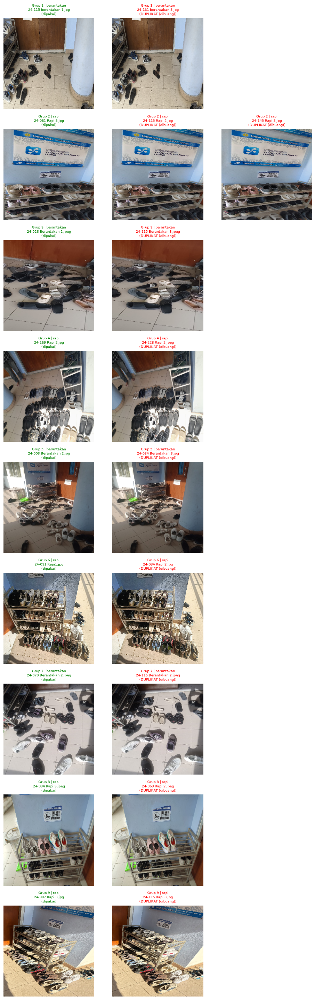
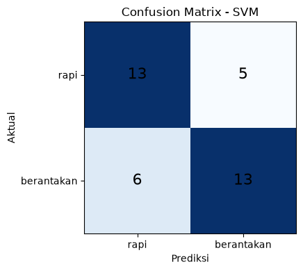
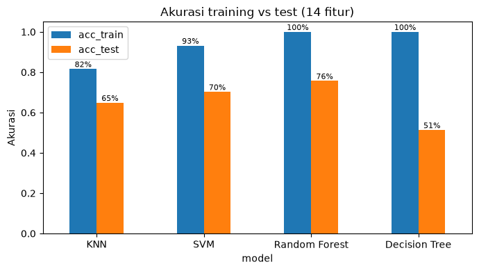

<!DOCTYPE html>


<html lang="en" data-content_root="../" >

  <head>
    <meta charset="utf-8" />
    <meta name="viewport" content="width=device-width, initial-scale=1.0" /><meta name="viewport" content="width=device-width, initial-scale=1" />

    <title>Klasifikasi Citra Ruangan: Rapi vs. Berantakan Berbasis Ekstraksi Fitur Warna (RGB) dan Tekstur (GLCM) &#8212; Profile habiba</title>
  
  
  
  <script data-cfasync="false">
    document.documentElement.dataset.mode = localStorage.getItem("mode") || "";
    document.documentElement.dataset.theme = localStorage.getItem("theme") || "";
  </script>
  
  <!-- Loaded before other Sphinx assets -->
  <link href="../_static/styles/theme.css?digest=dfe6caa3a7d634c4db9b" rel="stylesheet" />
<link href="../_static/styles/bootstrap.css?digest=dfe6caa3a7d634c4db9b" rel="stylesheet" />
<link href="../_static/styles/pydata-sphinx-theme.css?digest=dfe6caa3a7d634c4db9b" rel="stylesheet" />

  
  <link href="../_static/vendor/fontawesome/6.5.2/css/all.min.css?digest=dfe6caa3a7d634c4db9b" rel="stylesheet" />
  <link rel="preload" as="font" type="font/woff2" crossorigin href="../_static/vendor/fontawesome/6.5.2/webfonts/fa-solid-900.woff2" />
<link rel="preload" as="font" type="font/woff2" crossorigin href="../_static/vendor/fontawesome/6.5.2/webfonts/fa-brands-400.woff2" />
<link rel="preload" as="font" type="font/woff2" crossorigin href="../_static/vendor/fontawesome/6.5.2/webfonts/fa-regular-400.woff2" />

    <link rel="stylesheet" type="text/css" href="../_static/pygments.css?v=03e43079" />
    <link rel="stylesheet" type="text/css" href="../_static/styles/sphinx-book-theme.css?v=eba8b062" />
    <link rel="stylesheet" type="text/css" href="../_static/togglebutton.css?v=9c3e77be" />
    <link rel="stylesheet" type="text/css" href="../_static/copybutton.css?v=76b2166b" />
    <link rel="stylesheet" type="text/css" href="../_static/mystnb.8ecb98da25f57f5357bf6f572d296f466b2cfe2517ffebfabe82451661e28f02.css?v=6644e6bb" />
    <link rel="stylesheet" type="text/css" href="../_static/sphinx-thebe.css?v=4fa983c6" />
    <link rel="stylesheet" type="text/css" href="../_static/sphinx-design.min.css?v=95c83b7e" />
    <link rel="stylesheet" type="text/css" href="../_static/custom.css?v=ab63e892" />
  
  <!-- Pre-loaded scripts that we'll load fully later -->
  <link rel="preload" as="script" href="../_static/scripts/bootstrap.js?digest=dfe6caa3a7d634c4db9b" />
<link rel="preload" as="script" href="../_static/scripts/pydata-sphinx-theme.js?digest=dfe6caa3a7d634c4db9b" />
  <script src="../_static/vendor/fontawesome/6.5.2/js/all.min.js?digest=dfe6caa3a7d634c4db9b"></script>

    <script src="../_static/documentation_options.js?v=9eb32ce0"></script>
    <script src="../_static/doctools.js?v=9a2dae69"></script>
    <script src="../_static/sphinx_highlight.js?v=dc90522c"></script>
    <script src="../_static/clipboard.min.js?v=a7894cd8"></script>
    <script src="../_static/copybutton.js?v=f281be69"></script>
    <script src="../_static/scripts/sphinx-book-theme.js?v=887ef09a"></script>
    <script>let toggleHintShow = 'Click to show';</script>
    <script>let toggleHintHide = 'Click to hide';</script>
    <script>let toggleOpenOnPrint = 'true';</script>
    <script src="../_static/togglebutton.js?v=1ae7504c"></script>
    <script>var togglebuttonSelector = '.toggle, .admonition.dropdown';</script>
    <script src="../_static/design-tabs.js?v=f930bc37"></script>
    <script>const THEBE_JS_URL = "https://unpkg.com/thebe@0.8.2/lib/index.js"; const thebe_selector = ".thebe,.cell"; const thebe_selector_input = "pre"; const thebe_selector_output = ".output, .cell_output"</script>
    <script async="async" src="../_static/sphinx-thebe.js?v=c100c467"></script>
    <script>var togglebuttonSelector = '.toggle, .admonition.dropdown';</script>
    <script>const THEBE_JS_URL = "https://unpkg.com/thebe@0.8.2/lib/index.js"; const thebe_selector = ".thebe,.cell"; const thebe_selector_input = "pre"; const thebe_selector_output = ".output, .cell_output"</script>
    <script>window.MathJax = {"options": {"processHtmlClass": "tex2jax_process|mathjax_process|math|output_area"}}</script>
    <script defer="defer" src="https://cdn.jsdelivr.net/npm/mathjax@3/es5/tex-mml-chtml.js"></script>
    <script>DOCUMENTATION_OPTIONS.pagename = 'PSD_Citra_Predik/Klasifikasi_sebelum_data1';</script>
    <link rel="index" title="Index" href="../genindex.html" />
    <link rel="search" title="Search" href="../search.html" />
  <meta name="viewport" content="width=device-width, initial-scale=1"/>
  <meta name="docsearch:language" content="en"/>
  </head>
  
  
  <body data-bs-spy="scroll" data-bs-target=".bd-toc-nav" data-offset="180" data-bs-root-margin="0px 0px -60%" data-default-mode="">

  
  
  <div id="pst-skip-link" class="skip-link d-print-none"><a href="#main-content">Skip to main content</a></div>
  
  <div id="pst-scroll-pixel-helper"></div>
  
  <button type="button" class="btn rounded-pill" id="pst-back-to-top">
    <i class="fa-solid fa-arrow-up"></i>Back to top</button>

  
  <input type="checkbox"
          class="sidebar-toggle"
          id="pst-primary-sidebar-checkbox"/>
  <label class="overlay overlay-primary" for="pst-primary-sidebar-checkbox"></label>
  
  <input type="checkbox"
          class="sidebar-toggle"
          id="pst-secondary-sidebar-checkbox"/>
  <label class="overlay overlay-secondary" for="pst-secondary-sidebar-checkbox"></label>
  
  <div class="search-button__wrapper">
    <div class="search-button__overlay"></div>
    <div class="search-button__search-container">
<form class="bd-search d-flex align-items-center"
      action="../search.html"
      method="get">
  <i class="fa-solid fa-magnifying-glass"></i>
  <input type="search"
         class="form-control"
         name="q"
         id="search-input"
         placeholder="Search this book..."
         aria-label="Search this book..."
         autocomplete="off"
         autocorrect="off"
         autocapitalize="off"
         spellcheck="false"/>
  <span class="search-button__kbd-shortcut"><kbd class="kbd-shortcut__modifier">Ctrl</kbd>+<kbd>K</kbd></span>
</form></div>
  </div>

  <div class="pst-async-banner-revealer d-none">
  <aside id="bd-header-version-warning" class="d-none d-print-none" aria-label="Version warning"></aside>
</div>

  
    <header class="bd-header navbar navbar-expand-lg bd-navbar d-print-none">
    </header>
  

  <div class="bd-container">
    <div class="bd-container__inner bd-page-width">
      
      
      
        
      
      <div class="bd-sidebar-primary bd-sidebar">
        

  
  <div class="sidebar-header-items sidebar-primary__section">
    
    
    
    
  </div>
  
    <div class="sidebar-primary-items__start sidebar-primary__section">
        <div class="sidebar-primary-item">

  
    
  

<a class="navbar-brand logo" href="../intro.html">
  
  
  
  
  
    
    
      
    
    
    
    <script>document.write(``);</script>
  
  
</a></div>
        <div class="sidebar-primary-item">

 <script>
 document.write(`
   <button class="btn search-button-field search-button__button" title="Search" aria-label="Search" data-bs-placement="bottom" data-bs-toggle="tooltip">
    <i class="fa-solid fa-magnifying-glass"></i>
    <span class="search-button__default-text">Search</span>
    <span class="search-button__kbd-shortcut"><kbd class="kbd-shortcut__modifier">Ctrl</kbd>+<kbd class="kbd-shortcut__modifier">K</kbd></span>
   </button>
 `);
 </script></div>
        <div class="sidebar-primary-item"><nav class="bd-links bd-docs-nav" aria-label="Main">
    <div class="bd-toc-item navbar-nav active">
        
        <ul class="nav bd-sidenav bd-sidenav__home-link">
            <li class="toctree-l1">
                <a class="reference internal" href="../intro.html">
                    Profile
                </a>
            </li>
        </ul>
        <ul class="nav bd-sidenav">
<li class="toctree-l1 has-children"><a class="reference internal" href="../tuban/index.html">Kabupaten Tuban</a><details><summary><span class="toctree-toggle" role="presentation"><i class="fa-solid fa-chevron-down"></i></span></summary><ul>
<li class="toctree-l2"><a class="reference internal" href="../tuban/polutan.html">Kolekting Data: Kualitas Polusi Udara di Daerah Tuban</a></li>
<li class="toctree-l2"><a class="reference internal" href="../tuban/cloud-polutan.html">Eksplorasi Data: Integrasi Data menggunakan Aiven Cloud PostgreSQL, pgAdmin, dan Knime</a></li>
</ul>
</details></li>
<li class="toctree-l1 has-children"><a class="reference internal" href="../kerek/index.html">Daerah Kecamatan Kerek</a><details><summary><span class="toctree-toggle" role="presentation"><i class="fa-solid fa-chevron-down"></i></span></summary><ul>
<li class="toctree-l2"><a class="reference internal" href="../kerek/polutan-kerek.html">Kolekting Data: Kualitas Polusi Udara di Kecamatan Kerek, Tuban</a></li>
<li class="toctree-l2"><a class="reference internal" href="../kerek/cloud-kerek.html">Eksplorasi Data: Integrasi Data menggunakan Aiven Cloud PostgreSQL, pgAdmin, dan Knime</a></li>
<li class="toctree-l2"><a class="reference internal" href="../kerek/fitur-tsfel.html">Ringkasan Fitur TSFEL dan Rumus Matematika</a></li>
<li class="toctree-l2"><a class="reference internal" href="../kerek/ekstraksi-fitur.html">PreProcessing: Deteksi Outlier &amp; Imputasi Missing Value serta Ekstraksi Fitur Pada NO2</a></li>
<li class="toctree-l2"><a class="reference internal" href="../kerek/clustering-polutan.html">K-Means Clustering Polutan</a></li>
</ul>
</details></li>
<li class="toctree-l1 has-children"><a class="reference internal" href="../ekstraksi_2/index.html">Ekstraksi Fitur TSFEL</a><details><summary><span class="toctree-toggle" role="presentation"><i class="fa-solid fa-chevron-down"></i></span></summary><ul>
<li class="toctree-l2"><a class="reference internal" href="../ekstraksi_2/reduksi-polutan.html">Ekstraksi Fitur TSFEL Sebanyak 68 Fitur pada 3 Polutan (NO2, SO2, CO)</a></li>

</ul>
</details></li>
<li class="toctree-l1 has-children"><a class="reference internal" href="../klasifikasi/index.html">Klasfikasi Sawah dan Non-Sawah</a><details><summary><span class="toctree-toggle" role="presentation"><i class="fa-solid fa-chevron-down"></i></span></summary><ul>
<li class="toctree-l2"><a class="reference internal" href="../klasifikasi/klasifikasi-sawah.html">Klasifikasi Spasial Lahan Sawah dan Non-Sawah Menggunakan Citra Sentinel-2A</a></li>
</ul>
</details></li>
<li class="toctree-l1 has-children"><a class="reference internal" href="../uts-klasifikasi/index.html">Klasfikasi Citra</a><details><summary><span class="toctree-toggle" role="presentation"><i class="fa-solid fa-chevron-down"></i></span></summary><ul>
<li class="toctree-l2"><a class="reference internal" href="../uts-klasifikasi/uts-klasifikasi.html">UTS : Sistem Informasi Geografis</a></li>
<li class="toctree-l2"><a class="reference internal" href="../uts-klasifikasi/uts-klasifikasi5.html">UTS : Sistem Informasi Geografis Menggunakan Piksel</a></li>
</ul>
</details></li>
<li class="toctree-l1 has-children"><a class="reference internal" href="../klasifikasi_audio/index.html">Klasfikasi Audio</a><details><summary><span class="toctree-toggle" role="presentation"><i class="fa-solid fa-chevron-down"></i></span></summary><ul>
<li class="toctree-l2"><a class="reference internal" href="../klasifikasi_audio/ekstraksi_audio.html">Klasifikasi Audio Berisik vs Non-Berisik</a></li>
</ul>
</details></li>
<li class="toctree-l1 has-children"><a class="reference internal" href="../sistem_klasifikasi_audio/index.html">Klasfikasi Audio</a><details><summary><span class="toctree-toggle" role="presentation"><i class="fa-solid fa-chevron-down"></i></span></summary><ul>
<li class="toctree-l2"><a class="reference internal" href="../sistem_klasifikasi_audio/ekstraksi_audio_ensemble.html">Klasifikasi Audio Berisik vs Non-Berisik Menggunakan SVM</a></li>
</ul>
</details></li>
</ul>

    </div>
</nav></div>
    </div>
  
  
  <div class="sidebar-primary-items__end sidebar-primary__section">
  </div>
  
  <div id="rtd-footer-container"></div>


      </div>
      
      <main id="main-content" class="bd-main" role="main">
        
        

<div class="sbt-scroll-pixel-helper"></div>

          <div class="bd-content">
            <div class="bd-article-container">
              
              <div class="bd-header-article d-print-none">
<div class="header-article-items header-article__inner">
  
    <div class="header-article-items__start">
      
        <div class="header-article-item"><button class="sidebar-toggle primary-toggle btn btn-sm" title="Toggle primary sidebar" data-bs-placement="bottom" data-bs-toggle="tooltip">
  <span class="fa-solid fa-bars"></span>
</button></div>
      
    </div>
  
  
    <div class="header-article-items__end">
      
        <div class="header-article-item">

<div class="article-header-buttons">


<div class="dropdown dropdown-source-buttons">
  <button class="btn dropdown-toggle" type="button" data-bs-toggle="dropdown" aria-expanded="false" aria-label="Source repositories">
    <i class="fab fa-github"></i>
  </button>
  <ul class="dropdown-menu">
      
      
      
      <li><a href="https://github.com/NURHABIBATULUMAH/PSD" target="_blank"
   class="btn btn-sm btn-source-repository-button dropdown-item"
   title="Source repository"
   data-bs-placement="left" data-bs-toggle="tooltip"
>
  

<span class="btn__icon-container">
  <i class="fab fa-github"></i>
  </span>
<span class="btn__text-container">Repository</span>
</a>
</li>
      
      
      
      
      <li><a href="https://github.com/NURHABIBATULUMAH/PSD/issues/new?title=Issue%20on%20page%20%2FPSD_Citra_Predik/Klasifikasi_sebelum_data1.html&body=Your%20issue%20content%20here." target="_blank"
   class="btn btn-sm btn-source-issues-button dropdown-item"
   title="Open an issue"
   data-bs-placement="left" data-bs-toggle="tooltip"
>
  

<span class="btn__icon-container">
  <i class="fas fa-lightbulb"></i>
  </span>
<span class="btn__text-container">Open issue</span>
</a>
</li>
      
  </ul>
</div>


<div class="dropdown dropdown-download-buttons">
  <button class="btn dropdown-toggle" type="button" data-bs-toggle="dropdown" aria-expanded="false" aria-label="Download this page">
    <i class="fas fa-download"></i>
  </button>
  <ul class="dropdown-menu">
      
      
      
      <li><a href="../_sources/PSD_Citra_Predik/Klasifikasi_sebelum_data1.ipynb" target="_blank"
   class="btn btn-sm btn-download-source-button dropdown-item"
   title="Download source file"
   data-bs-placement="left" data-bs-toggle="tooltip"
>
  

<span class="btn__icon-container">
  <i class="fas fa-file"></i>
  </span>
<span class="btn__text-container">.ipynb</span>
</a>
</li>
      
      
      
      
      <li>
<button onclick="window.print()"
  class="btn btn-sm btn-download-pdf-button dropdown-item"
  title="Print to PDF"
  data-bs-placement="left" data-bs-toggle="tooltip"
>
  

<span class="btn__icon-container">
  <i class="fas fa-file-pdf"></i>
  </span>
<span class="btn__text-container">.pdf</span>
</button>
</li>
      
  </ul>
</div>


<button onclick="toggleFullScreen()"
  class="btn btn-sm btn-fullscreen-button"
  title="Fullscreen mode"
  data-bs-placement="bottom" data-bs-toggle="tooltip"
>
  

<span class="btn__icon-container">
  <i class="fas fa-expand"></i>
  </span>

</button>


<script>
document.write(`
  <button class="btn btn-sm nav-link pst-navbar-icon theme-switch-button" title="light/dark" aria-label="light/dark" data-bs-placement="bottom" data-bs-toggle="tooltip">
    <i class="theme-switch fa-solid fa-sun fa-lg" data-mode="light"></i>
    <i class="theme-switch fa-solid fa-moon fa-lg" data-mode="dark"></i>
    <i class="theme-switch fa-solid fa-circle-half-stroke fa-lg" data-mode="auto"></i>
  </button>
`);
</script>


<script>
document.write(`
  <button class="btn btn-sm pst-navbar-icon search-button search-button__button" title="Search" aria-label="Search" data-bs-placement="bottom" data-bs-toggle="tooltip">
    <i class="fa-solid fa-magnifying-glass fa-lg"></i>
  </button>
`);
</script>
<button class="sidebar-toggle secondary-toggle btn btn-sm" title="Toggle secondary sidebar" data-bs-placement="bottom" data-bs-toggle="tooltip">
    <span class="fa-solid fa-list"></span>
</button>
</div></div>
      
    </div>
  
</div>
</div>
              
              

<div id="jb-print-docs-body" class="onlyprint">
    <h1>Klasifikasi Citra Ruangan: Rapi vs. Berantakan Berbasis Ekstraksi Fitur Warna (RGB) dan Tekstur (GLCM)</h1>
    <!-- Table of contents -->
    <div id="print-main-content">
        <div id="jb-print-toc">
            
            <div>
                <h2> Contents </h2>
            </div>
            <nav aria-label="Page">
                <ul class="visible nav section-nav flex-column">
<li class="toc-h2 nav-item toc-entry"><a class="reference internal nav-link" href="#penerapan-komprehensif-metodologi-crisp-dm-cross-industry-standard-process-for-data-mining">Penerapan Komprehensif Metodologi CRISP-DM (<em>Cross-Industry Standard Process for Data Mining</em>)</a></li>
<li class="toc-h2 nav-item toc-entry"><a class="reference internal nav-link" href="#ringkasan-eksekutif-proyek-executive-summary">Ringkasan Eksekutif Proyek (<em>Executive Summary</em>)</a></li>
<li class="toc-h2 nav-item toc-entry"><a class="reference internal nav-link" href="#tahap-1-business-understanding-pemahaman-bisnis">1. TAHAP 1: BUSINESS UNDERSTANDING (Pemahaman Bisnis)</a><ul class="nav section-nav flex-column">
<li class="toc-h3 nav-item toc-entry"><a class="reference internal nav-link" href="#latar-belakang-masalah">1.1 Latar Belakang Masalah</a></li>
<li class="toc-h3 nav-item toc-entry"><a class="reference internal nav-link" href="#rumusan-masalah">1.2 Rumusan Masalah</a></li>
<li class="toc-h3 nav-item toc-entry"><a class="reference internal nav-link" href="#tujuan-proyek">1.3 Tujuan Proyek</a></li>
<li class="toc-h3 nav-item toc-entry"><a class="reference internal nav-link" href="#kriteria-keberhasilan-success-criteria">1.4 Kriteria Keberhasilan (<em>Success Criteria</em>)</a></li>
<li class="toc-h3 nav-item toc-entry"><a class="reference internal nav-link" href="#kerangka-kerja-metodologi-crisp-dm">1.5 Kerangka Kerja Metodologi (CRISP-DM)</a></li>
</ul>
</li>
<li class="toc-h2 nav-item toc-entry"><a class="reference internal nav-link" href="#inisialisasi-environment-konfigurasi-sistem">Inisialisasi Environment &amp; Konfigurasi Sistem</a></li>
<li class="toc-h2 nav-item toc-entry"><a class="reference internal nav-link" href="#tahap-2-data-understanding-pemahaman-data">2. TAHAP 2: DATA UNDERSTANDING (Pemahaman Data)</a><ul class="nav section-nav flex-column">
<li class="toc-h3 nav-item toc-entry"><a class="reference internal nav-link" href="#karakteristik-dataset-awal">2.1 Karakteristik Dataset Awal</a></li>
<li class="toc-h3 nav-item toc-entry"><a class="reference internal nav-link" href="#audit-kualitas-data-deteksi-data-leakage-via-hashing-md5">2.2 Audit Kualitas Data: Deteksi Data Leakage via Hashing MD5</a></li>
<li class="toc-h3 nav-item toc-entry"><a class="reference internal nav-link" href="#rincian-audit-kelompok-duplikat">2.3 Rincian Audit Kelompok Duplikat</a></li>
<li class="toc-h3 nav-item toc-entry"><a class="reference internal nav-link" href="#verifikasi-visual-kelompok-foto-duplikat">2.4 Verifikasi Visual Kelompok Foto Duplikat</a></li>
</ul>
</li>
<li class="toc-h2 nav-item toc-entry"><a class="reference internal nav-link" href="#tahap-3-data-preparation-persiapan-data-rekayasa-fitur">3. TAHAP 3: DATA PREPARATION (Persiapan Data &amp; Rekayasa Fitur)</a><ul class="nav section-nav flex-column">
<li class="toc-h3 nav-item toc-entry"><a class="reference internal nav-link" href="#landasan-teoretis-rekayasa-fitur-citra-feature-engineering">3.1 Landasan Teoretis Rekayasa Fitur Citra (<em>Feature Engineering</em>)</a></li>
<li class="toc-h3 nav-item toc-entry"><a class="reference internal nav-link" href="#ekstraksi-fitur-warna-color-moments-9-fitur">3.2 Ekstraksi Fitur Warna: Color Moments (9 Fitur)</a></li>
<li class="toc-h3 nav-item toc-entry"><a class="reference internal nav-link" href="#ekstraksi-fitur-tekstur-glcm-gray-level-co-occurrence-matrix-5-fitur">3.3 Ekstraksi Fitur Tekstur: GLCM (<em>Gray-Level Co-occurrence Matrix</em>) (5 Fitur)</a></li>
<li class="toc-h3 nav-item toc-entry"><a class="reference internal nav-link" href="#proses-ekstraksi-fitur-skala-penuh-batch-feature-extraction">3.4 Proses Ekstraksi Fitur Skala Penuh (Batch Feature Extraction)</a></li>
<li class="toc-h3 nav-item toc-entry"><a class="reference internal nav-link" href="#penyimpanan-dataset-fitur-analisis-statistik-deskriptif">3.5 Penyimpanan Dataset Fitur &amp; Analisis Statistik Deskriptif</a></li>
</ul>
</li>
<li class="toc-h2 nav-item toc-entry"><a class="reference internal nav-link" href="#tahap-4-modeling-pemodelan-machine-learning">4. TAHAP 4: MODELING (Pemodelan Machine Learning)</a><ul class="nav section-nav flex-column">
<li class="toc-h3 nav-item toc-entry"><a class="reference internal nav-link" href="#pemilihan-algoritma-klasifikasi">4.1 Pemilihan Algoritma Klasifikasi</a></li>
<li class="toc-h3 nav-item toc-entry"><a class="reference internal nav-link" href="#skenario-eksperimen-subset-fitur">4.2 Skenario Eksperimen Subset Fitur</a></li>
<li class="toc-h3 nav-item toc-entry"><a class="reference internal nav-link" href="#strategi-pengukuran-akurasi">4.3 Strategi Pengukuran Akurasi</a></li>
<li class="toc-h3 nav-item toc-entry"><a class="reference internal nav-link" href="#partisi-dataset-pembagian-data-training-80-dan-data-testing-20">4.4 Partisi Dataset: Pembagian Data Training (80%) dan Data Testing (20%)</a></li>
</ul>
</li>
<li class="toc-h2 nav-item toc-entry"><a class="reference internal nav-link" href="#tahap-5-evaluation-evaluasi-model-analisis-hasil">5. TAHAP 5: EVALUATION (Evaluasi Model &amp; Analisis Hasil)</a><ul class="nav section-nav flex-column">
<li class="toc-h3 nav-item toc-entry"><a class="reference internal nav-link" href="#komparasi-kinerja-12-konfigurasi-eksperimen">5.1 Komparasi Kinerja 12 Konfigurasi Eksperimen</a></li>
<li class="toc-h3 nav-item toc-entry"><a class="reference internal nav-link" href="#analisis-hasil-penentuan-model-terbaik">5.2 Analisis Hasil &amp; Penentuan Model Terbaik</a></li>
<li class="toc-h3 nav-item toc-entry"><a class="reference internal nav-link" href="#evaluasi-diagnostik-confusion-matrix-model-terbaik-svm-14-fitur">5.3 Evaluasi Diagnostik: Confusion Matrix Model Terbaik (SVM - 14 Fitur)</a></li>
<li class="toc-h3 nav-item toc-entry"><a class="reference internal nav-link" href="#analisis-metrik-evaluasi-lanjutan-classification-report">5.4 Analisis Metrik Evaluasi Lanjutan (Classification Report)</a></li>
<li class="toc-h3 nav-item toc-entry"><a class="reference internal nav-link" href="#analisis-overfitting-celah-generalisasi-generalization-gap">5.5 Analisis Overfitting &amp; Celah Generalisasi (<em>Generalization Gap</em>)</a></li>
<li class="toc-h3 nav-item toc-entry"><a class="reference internal nav-link" href="#evaluasi-selisih-akurasi-batasan-fisis-fitur">5.6 Evaluasi Selisih Akurasi &amp; Batasan Fisis Fitur</a></li>
</ul>
</li>
<li class="toc-h2 nav-item toc-entry"><a class="reference internal nav-link" href="#tahap-6-deployment-penerapan-rencana-implementasi">6. TAHAP 6: DEPLOYMENT (Penerapan &amp; Rencana Implementasi)</a><ul class="nav section-nav flex-column">
<li class="toc-h3 nav-item toc-entry"><a class="reference internal nav-link" href="#rekomendasi-model-produksi">6.1 Rekomendasi Model Produksi</a></li>
<li class="toc-h3 nav-item toc-entry"><a class="reference internal nav-link" href="#alur-inferensi-sistem-produksi-inference-pipeline">6.2 Alur Inferensi Sistem Produksi (<em>Inference Pipeline</em>)</a></li>
<li class="toc-h3 nav-item toc-entry"><a class="reference internal nav-link" href="#desain-arsitektur-penerapan-deployment-architecture">6.3 Desain Arsitektur Penerapan (<em>Deployment Architecture</em>)</a></li>
<li class="toc-h3 nav-item toc-entry"><a class="reference internal nav-link" href="#pemantauan-kinerja-mitigasi-drift-mlops-maintenance">6.4 Pemantauan Kinerja &amp; Mitigasi Drift (<em>MLOps Maintenance</em>)</a></li>
<li class="toc-h3 nav-item toc-entry"><a class="reference internal nav-link" href="#lembar-fakta-proyek-project-factsheet-untuk-evaluasi-ujian">6.5 Lembar Fakta Proyek (<em>Project Factsheet</em> untuk Evaluasi &amp; Ujian)</a></li>
</ul>
</li>
</ul>
            </nav>
        </div>
    </div>
</div>

              
                
<div id="searchbox"></div>
                <article class="bd-article">
                  
  <section class="tex2jax_ignore mathjax_ignore" id="klasifikasi-citra-ruangan-rapi-vs-berantakan-berbasis-ekstraksi-fitur-warna-rgb-dan-tekstur-glcm">
<h1>Klasifikasi Citra Ruangan: Rapi vs. Berantakan Berbasis Ekstraksi Fitur Warna (RGB) dan Tekstur (GLCM)<a class="headerlink" href="#klasifikasi-citra-ruangan-rapi-vs-berantakan-berbasis-ekstraksi-fitur-warna-rgb-dan-tekstur-glcm" title="Link to this heading">#</a></h1>
<section id="penerapan-komprehensif-metodologi-crisp-dm-cross-industry-standard-process-for-data-mining">
<h2>Penerapan Komprehensif Metodologi CRISP-DM (<em>Cross-Industry Standard Process for Data Mining</em>)<a class="headerlink" href="#penerapan-komprehensif-metodologi-crisp-dm-cross-industry-standard-process-for-data-mining" title="Link to this heading">#</a></h2>
</section>
<hr class="docutils" />
<section id="ringkasan-eksekutif-proyek-executive-summary">
<h2>Ringkasan Eksekutif Proyek (<em>Executive Summary</em>)<a class="headerlink" href="#ringkasan-eksekutif-proyek-executive-summary" title="Link to this heading">#</a></h2>
<div class="pst-scrollable-table-container"><table class="table">
<thead>
<tr class="row-odd"><th class="head text-left"><p>Parameter Proyek</p></th>
<th class="head text-left"><p>Keterangan / Nilai</p></th>
</tr>
</thead>
<tbody>
<tr class="row-even"><td class="text-left"><p><strong>Domain Masalah</strong></p></td>
<td class="text-left"><p>Pengolahan Citra Digital (<em>Computer Vision</em>) &amp; <em>Machine Learning</em></p></td>
</tr>
<tr class="row-odd"><td class="text-left"><p><strong>Kasus Klasifikasi</strong></p></td>
<td class="text-left"><p>Biner: <strong>Rapi</strong> (<em>neat/tidy</em>) vs. <strong>Berantakan</strong> (<em>messy/cluttered</em>)</p></td>
</tr>
<tr class="row-even"><td class="text-left"><p><strong>Total Dataset Awal</strong></p></td>
<td class="text-left"><p><strong>194 citra digital</strong> (97 kelas <em>rapi</em>, 97 kelas <em>berantakan</em>)</p></td>
</tr>
<tr class="row-odd"><td class="text-left"><p><strong>Pembersihan Data (Deduplikasi MD5)</strong></p></td>
<td class="text-left"><p><strong>184 citra bersih</strong> (91 kelas <em>rapi</em>, 93 kelas <em>berantakan</em>) — 10 citra duplikat dibuang</p></td>
</tr>
<tr class="row-even"><td class="text-left"><p><strong>Pembagian Data (Train-Test Split)</strong></p></td>
<td class="text-left"><p><strong>80% Data Latih (147 citra)</strong> : <strong>20% Data Uji (37 citra)</strong> dengan <em>stratified sampling</em></p></td>
</tr>
<tr class="row-odd"><td class="text-left"><p><strong>Fitur yang Diekstraksi (14 Fitur)</strong></p></td>
<td class="text-left"><p><strong>9 Fitur Warna RGB</strong> (Mean, Std, Skewness R/G/B) + <strong>5 Fitur Tekstur GLCM</strong> (Energi, Entropy, Kontras, Korelasi, Homogenitas)</p></td>
</tr>
<tr class="row-even"><td class="text-left"><p><strong>Algoritma yang Diuji (4 Model)</strong></p></td>
<td class="text-left"><p>K-Nearest Neighbors (KNN), Support Vector Machine (SVM), Random Forest, Decision Tree</p></td>
</tr>
<tr class="row-odd"><td class="text-left"><p><strong>Akurasi Testing Tertinggi</strong></p></td>
<td class="text-left"><p><strong>Random Forest (Semua 14 Fitur)</strong>: <strong>75.68% (75.7%)</strong> (<em>Train</em>: 100.0%, <em>CV</em>: 60.33%)</p></td>
</tr>
<tr class="row-even"><td class="text-left"><p><strong>Model Terbaik &amp; Paling Stabil (CV 5-Fold)</strong></p></td>
<td class="text-left"><p><strong>Support Vector Machine (SVM) - Semua 14 Fitur</strong>: <strong>72.84% (72.8%)</strong> (<em>Test</em>: <strong>70.27%</strong>, <em>Train</em>: 93.20%)</p></td>
</tr>
<tr class="row-odd"><td class="text-left"><p><strong>Artefak Luaran</strong></p></td>
<td class="text-left"><p>Dataset fitur CSV (<code class="docutils literal notranslate"><span class="pre">fitur_citra_dedup.csv</span></code>), daftar duplikat, matriks konfusi, dan kurva evaluasi</p></td>
</tr>
</tbody>
</table>
</div>
</section>
<hr class="docutils" />
<section id="tahap-1-business-understanding-pemahaman-bisnis">
<h2>1. TAHAP 1: BUSINESS UNDERSTANDING (Pemahaman Bisnis)<a class="headerlink" href="#tahap-1-business-understanding-pemahaman-bisnis" title="Link to this heading">#</a></h2>
<section id="latar-belakang-masalah">
<h3>1.1 Latar Belakang Masalah<a class="headerlink" href="#latar-belakang-masalah" title="Link to this heading">#</a></h3>
<p>Kondisi keteraturan dan kerapian suatu ruangan (seperti kamar tidur, ruang kerja, dan ruang belajar) memiliki pengaruh signifikan terhadap kesehatan mental, fokus produktivitas, serta higienitas penghuninya. Dalam kehidupan sehari-hari, inspeksi kondisi ruangan umumnya dilakukan secara manual dan konvensional, yang memiliki berbagai keterbatasan:</p>
<ol class="arabic simple">
<li><p><strong>Subjektif</strong>: Definisi kerapian bervariasi antar individu tanpa acuan matematis yang pasti.</p></li>
<li><p><strong>Tidak Efisien</strong>: Memerlukan waktu, kehadiran fisik manusia, dan sulit diotomasi dalam skala besar.</p></li>
<li><p><strong>Kebutuhan Otomasi Cerdas</strong>: Pada ekosistem rumah pintar (<em>smart home</em>), manajemen fasilitas perhotelan, maupun robotika pembersih ruangan (<em>vacuum robots</em>), diperlukan kemampuan komputasional agar perangkat dapat memahami apakah ruangan dalam keadaan rapi atau membutuhkan penataan ulang.</p></li>
</ol>
<p>Dengan memanfaatkan teknik <strong>Pengolahan Citra Digital</strong> dan <strong>Machine Learning</strong>, sistem dapat secara otomatis mengekstraksi pola warna dan struktur tekstur dari foto ruangan untuk melakukan klasifikasi secara objektif dan instan.</p>
</section>
<section id="rumusan-masalah">
<h3>1.2 Rumusan Masalah<a class="headerlink" href="#rumusan-masalah" title="Link to this heading">#</a></h3>
<ol class="arabic simple">
<li><p>Bagaimana mengekstraksi fitur visual representatif dari citra ruangan melalui pendekatan statistik warna (Mean, Standard Deviation, Skewness pada kanal R, G, B) dan tekstur spasial (<em>Gray-Level Co-occurrence Matrix</em> / GLCM)?</p></li>
<li><p>Bagaimana mendeteksi dan menangani foto duplikat (<em>identical images</em>) agar tidak terjadi kebocoran data (<em>data leakage</em>) yang membiaskan hasil evaluasi model?</p></li>
<li><p>Manakah kombinasi subset fitur (Warna 9 fitur, Tekstur GLCM 5 fitur, atau Gabungan 14 fitur) yang memberikan akurasi klasifikasi terbaik?</p></li>
<li><p>Algoritma machine learning manakah di antara KNN, SVM, Random Forest, dan Decision Tree yang menghasilkan performa akurasi tertinggi serta paling tahan terhadap masalah <em>overfitting</em>?</p></li>
</ol>
</section>
<section id="tujuan-proyek">
<h3>1.3 Tujuan Proyek<a class="headerlink" href="#tujuan-proyek" title="Link to this heading">#</a></h3>
<ul class="simple">
<li><p><strong>Membangun Pipeline Ekstraksi Fitur Citra</strong>: Menghitung 9 fitur statistik warna (R, G, B) dan 5 fitur tekstur GLCM pada citra grayscale terkuantisasi (total 14 fitur prediktor per citra).</p></li>
<li><p><strong>Audit &amp; Pembersihan Integritas Dataset</strong>: Melakukan deduplikasi citra berbasis <em>cryptographic hash</em> MD5 untuk menjamin data latih dan data uji benar-benar independen.</p></li>
<li><p><strong>Eksperimen Komparasi Multi-Model &amp; Multi-Feature</strong>: Melatih dan mengevaluasi 4 algoritma klasifikasi pada 3 subset fitur (total 12 kombinasi eksperimen).</p></li>
<li><p><strong>Evaluasi Menyeluruh</strong>: Mengukur metrik akurasi pengujian (<em>hold-out test accuracy</em>), validasi silang (<em>5-Fold Stratified Cross-Validation</em>), <em>Precision</em>, <em>Recall</em>, <em>F1-Score</em>, dan <em>Confusion Matrix</em>.</p></li>
<li><p><strong>Perancangan Deployment</strong>: Menyusun rencana arsitektur penerapan sistem klasifikasi citra berbasis inferensi pipeline untuk penggunaan nyata.</p></li>
</ul>
</section>
<section id="kriteria-keberhasilan-success-criteria">
<h3>1.4 Kriteria Keberhasilan (<em>Success Criteria</em>)<a class="headerlink" href="#kriteria-keberhasilan-success-criteria" title="Link to this heading">#</a></h3>
<ul class="simple">
<li><p>Pipeline mampu memproses citra dan mengekspor dataset fitur tabular berformat CSV yang valid.</p></li>
<li><p>Tidak ada data kembar (<em>duplicate leak</em>) antara partisi training dan testing.</p></li>
<li><p>Model terbaik mencapai akurasi pengujian <span class="math notranslate nohighlight">\(\ge 70\%\)</span> dengan metrik presisi dan recall yang seimbang pada kedua kelas.</p></li>
<li><p>Model memiliki stabilitas generalisasi yang baik berdasarkan skor validasi silang (<em>cross-validation</em>).</p></li>
</ul>
</section>
<section id="kerangka-kerja-metodologi-crisp-dm">
<h3>1.5 Kerangka Kerja Metodologi (CRISP-DM)<a class="headerlink" href="#kerangka-kerja-metodologi-crisp-dm" title="Link to this heading">#</a></h3>
<p>Proyek ini diorganisasikan secara sistematis mengikuti siklus standar industri <strong>CRISP-DM</strong>:</p>
<ol class="arabic simple">
<li><p><strong>Business Understanding</strong>: Mendefinisikan latar belakang, rumusan masalah, tujuan, dan metrik performa.</p></li>
<li><p><strong>Data Understanding</strong>: Memahami karakteristik dataset citra, audit distribusi kelas, dan eliminasi duplikasi data via MD5.</p></li>
<li><p><strong>Data Preparation</strong>: Pra-pemrosesan citra, ekstraksi 14 fitur visual, normalisasi data (<code class="docutils literal notranslate"><span class="pre">StandardScaler</span></code>), dan partisi train-test 80:20.</p></li>
<li><p><strong>Modeling</strong>: Pelatihan 4 model machine learning pada 3 subset fitur dengan pipeline scikit-learn.</p></li>
<li><p><strong>Evaluation</strong>: Komparasi kinerja, analisis overfitting, diagnostik confusion matrix, dan classification report.</p></li>
<li><p><strong>Deployment</strong>: Perancangan alur inferensi, rekomendasi model produksi, dan arsitektur integrasi sistem.</p></li>
</ol>
</section>
</section>
<section id="inisialisasi-environment-konfigurasi-sistem">
<h2>Inisialisasi Environment &amp; Konfigurasi Sistem<a class="headerlink" href="#inisialisasi-environment-konfigurasi-sistem" title="Link to this heading">#</a></h2>
<p>Menyiapkan pustaka pengolahan citra, komputasi numerik, pemodelan machine learning, dan visualisasi:</p>
<ul class="simple">
<li><p><strong>Pengolahan Citra</strong>: <code class="docutils literal notranslate"><span class="pre">OpenCV</span> <span class="pre">(cv2)</span></code>, <code class="docutils literal notranslate"><span class="pre">skimage.feature</span> <span class="pre">(graycomatrix,</span> <span class="pre">graycoprops)</span></code></p></li>
<li><p><strong>Komputasi &amp; Analisis Data</strong>: <code class="docutils literal notranslate"><span class="pre">numpy</span></code>, <code class="docutils literal notranslate"><span class="pre">pandas</span></code>, <code class="docutils literal notranslate"><span class="pre">scipy.stats.skew</span></code></p></li>
<li><p><strong>Machine Learning &amp; Validasi</strong>: <code class="docutils literal notranslate"><span class="pre">scikit-learn</span></code> (<code class="docutils literal notranslate"><span class="pre">train_test_split</span></code>, <code class="docutils literal notranslate"><span class="pre">StratifiedKFold</span></code>, <code class="docutils literal notranslate"><span class="pre">cross_val_score</span></code>, <code class="docutils literal notranslate"><span class="pre">StandardScaler</span></code>, <code class="docutils literal notranslate"><span class="pre">Pipeline</span></code>, <code class="docutils literal notranslate"><span class="pre">KNN</span></code>, <code class="docutils literal notranslate"><span class="pre">SVC</span></code>, <code class="docutils literal notranslate"><span class="pre">RandomForestClassifier</span></code>, <code class="docutils literal notranslate"><span class="pre">DecisionTreeClassifier</span></code>, <code class="docutils literal notranslate"><span class="pre">confusion_matrix</span></code>, <code class="docutils literal notranslate"><span class="pre">classification_report</span></code>)</p></li>
<li><p><strong>Visualisasi &amp; Audit</strong>: <code class="docutils literal notranslate"><span class="pre">matplotlib.pyplot</span></code>, <code class="docutils literal notranslate"><span class="pre">hashlib</span></code></p></li>
</ul>
<blockquote>
<div><p><strong>Parameter Operasional</strong>: Variabel <code class="docutils literal notranslate"><span class="pre">MODE</span> <span class="pre">=</span> <span class="pre">&quot;dedup&quot;</span></code> diaktifkan untuk menyaring seluruh citra duplikat sebelum ekstraksi fitur dan pemodelan dilakukan.</p>
</div></blockquote>
<div class="cell docutils container">
<div class="cell_input docutils container">
<div class="highlight-ipython3 notranslate"><div class="highlight"><pre><span></span><span class="kn">import</span><span class="w"> </span><span class="nn">os</span><span class="o">,</span><span class="w"> </span><span class="nn">glob</span><span class="o">,</span><span class="w"> </span><span class="nn">hashlib</span><span class="o">,</span><span class="w"> </span><span class="nn">warnings</span>
<span class="kn">import</span><span class="w"> </span><span class="nn">numpy</span><span class="w"> </span><span class="k">as</span><span class="w"> </span><span class="nn">np</span><span class="o">,</span><span class="w"> </span><span class="nn">pandas</span><span class="w"> </span><span class="k">as</span><span class="w"> </span><span class="nn">pd</span><span class="o">,</span><span class="w"> </span><span class="nn">cv2</span>
<span class="kn">import</span><span class="w"> </span><span class="nn">matplotlib.pyplot</span><span class="w"> </span><span class="k">as</span><span class="w"> </span><span class="nn">plt</span>
<span class="kn">from</span><span class="w"> </span><span class="nn">scipy.stats</span><span class="w"> </span><span class="kn">import</span> <span class="n">skew</span>
<span class="kn">from</span><span class="w"> </span><span class="nn">skimage.feature</span><span class="w"> </span><span class="kn">import</span> <span class="n">graycomatrix</span><span class="p">,</span> <span class="n">graycoprops</span>
<span class="kn">from</span><span class="w"> </span><span class="nn">sklearn.model_selection</span><span class="w"> </span><span class="kn">import</span> <span class="n">train_test_split</span><span class="p">,</span> <span class="n">cross_val_score</span><span class="p">,</span> <span class="n">StratifiedKFold</span>
<span class="kn">from</span><span class="w"> </span><span class="nn">sklearn.preprocessing</span><span class="w"> </span><span class="kn">import</span> <span class="n">StandardScaler</span>
<span class="kn">from</span><span class="w"> </span><span class="nn">sklearn.pipeline</span><span class="w"> </span><span class="kn">import</span> <span class="n">make_pipeline</span>
<span class="kn">from</span><span class="w"> </span><span class="nn">sklearn.neighbors</span><span class="w"> </span><span class="kn">import</span> <span class="n">KNeighborsClassifier</span>
<span class="kn">from</span><span class="w"> </span><span class="nn">sklearn.svm</span><span class="w"> </span><span class="kn">import</span> <span class="n">SVC</span>
<span class="kn">from</span><span class="w"> </span><span class="nn">sklearn.ensemble</span><span class="w"> </span><span class="kn">import</span> <span class="n">RandomForestClassifier</span>
<span class="kn">from</span><span class="w"> </span><span class="nn">sklearn.tree</span><span class="w"> </span><span class="kn">import</span> <span class="n">DecisionTreeClassifier</span>
<span class="kn">from</span><span class="w"> </span><span class="nn">sklearn.metrics</span><span class="w"> </span><span class="kn">import</span> <span class="n">accuracy_score</span><span class="p">,</span> <span class="n">confusion_matrix</span><span class="p">,</span> <span class="n">classification_report</span>
<span class="n">warnings</span><span class="o">.</span><span class="n">filterwarnings</span><span class="p">(</span><span class="s2">&quot;ignore&quot;</span><span class="p">)</span>

<span class="n">BASE</span> <span class="o">=</span> <span class="n">os</span><span class="o">.</span><span class="n">getcwd</span><span class="p">()</span>                       <span class="c1"># folder tempat notebook ini berada</span>
<span class="n">DATA</span> <span class="o">=</span> <span class="n">os</span><span class="o">.</span><span class="n">path</span><span class="o">.</span><span class="n">join</span><span class="p">(</span><span class="n">BASE</span><span class="p">,</span> <span class="s2">&quot;data&quot;</span><span class="p">)</span>        <span class="c1"># isi: data/rapi dan data/berantakan</span>
<span class="n">OUT</span>  <span class="o">=</span> <span class="n">os</span><span class="o">.</span><span class="n">path</span><span class="o">.</span><span class="n">join</span><span class="p">(</span><span class="n">BASE</span><span class="p">,</span> <span class="s2">&quot;hasil&quot;</span><span class="p">)</span>
<span class="n">os</span><span class="o">.</span><span class="n">makedirs</span><span class="p">(</span><span class="n">OUT</span><span class="p">,</span> <span class="n">exist_ok</span><span class="o">=</span><span class="kc">True</span><span class="p">)</span>

<span class="c1"># &quot;dedup&quot; = foto kembar dibuang (184 foto)  |  &quot;semua&quot; = semua foto dipakai (194 foto)</span>
<span class="n">MODE</span> <span class="o">=</span> <span class="s2">&quot;dedup&quot;</span>
<span class="n">SIZE</span> <span class="o">=</span> <span class="mi">256</span>                               <span class="c1"># semua citra di-resize ke 256x256 biar seragam &amp; cepat</span>
<span class="nb">print</span><span class="p">(</span><span class="s2">&quot;Mode:&quot;</span><span class="p">,</span> <span class="n">MODE</span><span class="p">)</span>
</pre></div>
</div>
</div>
<div class="cell_output docutils container">
<div class="output stream highlight-myst-ansi notranslate"><div class="highlight"><pre><span></span>Mode: dedup
</pre></div>
</div>
</div>
</div>
</section>
<section id="tahap-2-data-understanding-pemahaman-data">
<h2>2. TAHAP 2: DATA UNDERSTANDING (Pemahaman Data)<a class="headerlink" href="#tahap-2-data-understanding-pemahaman-data" title="Link to this heading">#</a></h2>
<section id="karakteristik-dataset-awal">
<h3>2.1 Karakteristik Dataset Awal<a class="headerlink" href="#karakteristik-dataset-awal" title="Link to this heading">#</a></h3>
<p>Dataset terdiri dari citra ruangan nyata yang terbagi ke dalam dua folder kelas:</p>
<ul class="simple">
<li><p><strong>Kelas <code class="docutils literal notranslate"><span class="pre">rapi</span></code></strong>: Kondisi ruangan tertata, barang-barang berada pada tempatnya, bidang lantai/meja teratur dan lapang.</p></li>
<li><p><strong>Kelas <code class="docutils literal notranslate"><span class="pre">berantakan</span></code></strong>: Kondisi ruangan berserakan, barang/pakaian tersebar tidak teratur di lantai, kasur, atau meja.</p></li>
</ul>
<p><strong>Statistik Dataset Awal:</strong></p>
<ul class="simple">
<li><p><strong>Total Citra</strong>: <strong>194 foto</strong></p></li>
<li><p><strong>Distribusi Kelas</strong>:</p>
<ul>
<li><p><code class="docutils literal notranslate"><span class="pre">rapi</span></code> = <strong>97 foto</strong> (50.0%)</p></li>
<li><p><code class="docutils literal notranslate"><span class="pre">berantakan</span></code> = <strong>97 foto</strong> (50.0%)</p></li>
</ul>
</li>
<li><p><strong>Keseimbangan Kelas</strong>: <em>Perfectly balanced</em> (50% : 50%).</p></li>
</ul>
</section>
<hr class="docutils" />
<section id="audit-kualitas-data-deteksi-data-leakage-via-hashing-md5">
<h3>2.2 Audit Kualitas Data: Deteksi Data Leakage via Hashing MD5<a class="headerlink" href="#audit-kualitas-data-deteksi-data-leakage-via-hashing-md5" title="Link to this heading">#</a></h3>
<p>Dalam machine learning, <strong>kebocoran data (<em>data leakage</em>)</strong> merupakan ancaman serius jika terdapat foto yang identik secara biner (byte-per-byte) tetapi memiliki nama file berbeda (misal dikumpulkan oleh dua mahasiswa berbeda):</p>
<ul class="simple">
<li><p><strong>Bahaya</strong>: Jika foto kembar terbagi ke data <em>training</em> dan <em>test</em>, model akan dengan mudah menghafal piksel yang sama persis, menghasilkan akurasi pengujian yang tinggi semu (<em>false high accuracy</em>).</p></li>
<li><p><strong>Solusi</strong>: Setiap file dibaca secara biner dan dihitung nilai hash <strong>MD5 (<em>Message Digest Algorithm 5</em>)</strong>. Dua file dengan konten piksel identik dipastikan menghasilkan kode hash heksadesimal 32 karakter yang sama.</p></li>
<li><p><strong>Aturan Deduplikasi</strong>: Dari setiap kelompok foto yang memiliki hash kembar, <strong>hanya 1 file pertama (berdasarkan urutan abjad) yang dipertahankan (<code class="docutils literal notranslate"><span class="pre">dipakai</span></code>)</strong>, sedangkan file duplikat lainnya disingkirkan (<code class="docutils literal notranslate"><span class="pre">DUPLIKAT</span> <span class="pre">(dibuang)</span></code>).</p></li>
</ul>
<div class="cell docutils container">
<div class="cell_input docutils container">
<div class="highlight-ipython3 notranslate"><div class="highlight"><pre><span></span><span class="n">rows</span> <span class="o">=</span> <span class="p">[]</span>
<span class="k">for</span> <span class="n">label</span> <span class="ow">in</span> <span class="p">[</span><span class="s2">&quot;rapi&quot;</span><span class="p">,</span> <span class="s2">&quot;berantakan&quot;</span><span class="p">]:</span>
    <span class="k">for</span> <span class="n">f</span> <span class="ow">in</span> <span class="nb">sorted</span><span class="p">(</span><span class="n">glob</span><span class="o">.</span><span class="n">glob</span><span class="p">(</span><span class="n">os</span><span class="o">.</span><span class="n">path</span><span class="o">.</span><span class="n">join</span><span class="p">(</span><span class="n">DATA</span><span class="p">,</span> <span class="n">label</span><span class="p">,</span> <span class="s2">&quot;*&quot;</span><span class="p">))):</span>
        <span class="n">rows</span><span class="o">.</span><span class="n">append</span><span class="p">(</span><span class="nb">dict</span><span class="p">(</span><span class="n">label</span><span class="o">=</span><span class="n">label</span><span class="p">,</span> <span class="n">file</span><span class="o">=</span><span class="n">os</span><span class="o">.</span><span class="n">path</span><span class="o">.</span><span class="n">basename</span><span class="p">(</span><span class="n">f</span><span class="p">),</span> <span class="n">path</span><span class="o">=</span><span class="n">f</span><span class="p">,</span>
                         <span class="n">md5</span><span class="o">=</span><span class="n">hashlib</span><span class="o">.</span><span class="n">md5</span><span class="p">(</span><span class="nb">open</span><span class="p">(</span><span class="n">f</span><span class="p">,</span> <span class="s2">&quot;rb&quot;</span><span class="p">)</span><span class="o">.</span><span class="n">read</span><span class="p">())</span><span class="o">.</span><span class="n">hexdigest</span><span class="p">()))</span>
<span class="n">files</span> <span class="o">=</span> <span class="n">pd</span><span class="o">.</span><span class="n">DataFrame</span><span class="p">(</span><span class="n">rows</span><span class="p">)</span>
<span class="n">files</span><span class="p">[</span><span class="s2">&quot;urutan_di_grup&quot;</span><span class="p">]</span> <span class="o">=</span> <span class="n">files</span><span class="o">.</span><span class="n">groupby</span><span class="p">(</span><span class="s2">&quot;md5&quot;</span><span class="p">)</span><span class="o">.</span><span class="n">cumcount</span><span class="p">()</span>
<span class="n">files</span><span class="p">[</span><span class="s2">&quot;jml_di_grup&quot;</span><span class="p">]</span> <span class="o">=</span> <span class="n">files</span><span class="o">.</span><span class="n">groupby</span><span class="p">(</span><span class="s2">&quot;md5&quot;</span><span class="p">)[</span><span class="s2">&quot;md5&quot;</span><span class="p">]</span><span class="o">.</span><span class="n">transform</span><span class="p">(</span><span class="s2">&quot;count&quot;</span><span class="p">)</span>
<span class="n">files</span><span class="p">[</span><span class="s2">&quot;status&quot;</span><span class="p">]</span> <span class="o">=</span> <span class="n">np</span><span class="o">.</span><span class="n">where</span><span class="p">(</span><span class="n">files</span><span class="o">.</span><span class="n">urutan_di_grup</span> <span class="o">==</span> <span class="mi">0</span><span class="p">,</span> <span class="s2">&quot;dipakai&quot;</span><span class="p">,</span> <span class="s2">&quot;DUPLIKAT (dibuang)&quot;</span><span class="p">)</span>

<span class="nb">print</span><span class="p">(</span><span class="s2">&quot;Jumlah foto asli  :&quot;</span><span class="p">,</span> <span class="nb">len</span><span class="p">(</span><span class="n">files</span><span class="p">))</span>
<span class="nb">print</span><span class="p">(</span><span class="n">files</span><span class="o">.</span><span class="n">label</span><span class="o">.</span><span class="n">value_counts</span><span class="p">()</span><span class="o">.</span><span class="n">to_string</span><span class="p">())</span>
<span class="n">dup</span> <span class="o">=</span> <span class="n">files</span><span class="p">[</span><span class="n">files</span><span class="o">.</span><span class="n">jml_di_grup</span> <span class="o">&gt;</span> <span class="mi">1</span><span class="p">]</span><span class="o">.</span><span class="n">copy</span><span class="p">()</span>
<span class="nb">print</span><span class="p">(</span><span class="s2">&quot;</span><span class="se">\n</span><span class="s2">Grup foto kembar  :&quot;</span><span class="p">,</span> <span class="n">dup</span><span class="o">.</span><span class="n">md5</span><span class="o">.</span><span class="n">nunique</span><span class="p">(),</span> <span class="s2">&quot;grup&quot;</span><span class="p">)</span>
<span class="nb">print</span><span class="p">(</span><span class="s2">&quot;Foto yang dibuang :&quot;</span><span class="p">,</span> <span class="p">(</span><span class="n">files</span><span class="o">.</span><span class="n">status</span> <span class="o">!=</span> <span class="s2">&quot;dipakai&quot;</span><span class="p">)</span><span class="o">.</span><span class="n">sum</span><span class="p">(),</span> <span class="s2">&quot;foto&quot;</span><span class="p">)</span>
<span class="nb">print</span><span class="p">(</span><span class="s2">&quot;Sisa setelah dedup:&quot;</span><span class="p">,</span> <span class="p">(</span><span class="n">files</span><span class="o">.</span><span class="n">status</span> <span class="o">==</span> <span class="s2">&quot;dipakai&quot;</span><span class="p">)</span><span class="o">.</span><span class="n">sum</span><span class="p">(),</span> <span class="s2">&quot;foto&quot;</span><span class="p">)</span>
</pre></div>
</div>
</div>
<div class="cell_output docutils container">
<div class="output stream highlight-myst-ansi notranslate"><div class="highlight"><pre><span></span>Jumlah foto asli  : 194
label
rapi          97
berantakan    97

Grup foto kembar  : 9 grup
Foto yang dibuang : 10 foto
Sisa setelah dedup: 184 foto
</pre></div>
</div>
</div>
</div>
</section>
<section id="rincian-audit-kelompok-duplikat">
<h3>2.3 Rincian Audit Kelompok Duplikat<a class="headerlink" href="#rincian-audit-kelompok-duplikat" title="Link to this heading">#</a></h3>
<p>Hasil audit membuktikan adanya file kembar di dalam dataset:</p>
<ul class="simple">
<li><p>Terdeteksi <strong>9 kelompok duplikat</strong> yang melibatkan total <strong>19 foto</strong>.</p></li>
<li><p>Sebanyak <strong>10 foto redundan disaring dan dibuang</strong> dari dataset.</p></li>
<li><p>Total citra bersih yang valid digunakan (<em>mode dedup</em>): <strong>184 foto</strong> (91 kelas <em>rapi</em>, 93 kelas <em>berantakan</em>).</p></li>
<li><p>Seluruh riwayat audit disimpan dalam file <code class="docutils literal notranslate"><span class="pre">hasil/daftar_foto_duplikat.csv</span></code>.</p></li>
</ul>
<div class="cell docutils container">
<div class="cell_input docutils container">
<div class="highlight-ipython3 notranslate"><div class="highlight"><pre><span></span><span class="n">dup</span><span class="p">[</span><span class="s2">&quot;grup&quot;</span><span class="p">]</span> <span class="o">=</span> <span class="n">dup</span><span class="o">.</span><span class="n">groupby</span><span class="p">(</span><span class="s2">&quot;md5&quot;</span><span class="p">)</span><span class="o">.</span><span class="n">ngroup</span><span class="p">()</span> <span class="o">+</span> <span class="mi">1</span>
<span class="n">tabel_dup</span> <span class="o">=</span> <span class="n">dup</span><span class="o">.</span><span class="n">sort_values</span><span class="p">([</span><span class="s2">&quot;grup&quot;</span><span class="p">,</span> <span class="s2">&quot;urutan_di_grup&quot;</span><span class="p">])[[</span><span class="s2">&quot;grup&quot;</span><span class="p">,</span> <span class="s2">&quot;label&quot;</span><span class="p">,</span> <span class="s2">&quot;file&quot;</span><span class="p">,</span> <span class="s2">&quot;status&quot;</span><span class="p">]]</span>
<span class="n">tabel_dup</span><span class="o">.</span><span class="n">to_csv</span><span class="p">(</span><span class="n">os</span><span class="o">.</span><span class="n">path</span><span class="o">.</span><span class="n">join</span><span class="p">(</span><span class="n">OUT</span><span class="p">,</span> <span class="s2">&quot;daftar_foto_duplikat.csv&quot;</span><span class="p">),</span> <span class="n">index</span><span class="o">=</span><span class="kc">False</span><span class="p">)</span>

<span class="c1"># tampilkan SEMUA baris (jangan dipotong pandas)</span>
<span class="n">pd</span><span class="o">.</span><span class="n">set_option</span><span class="p">(</span><span class="s2">&quot;display.max_rows&quot;</span><span class="p">,</span> <span class="kc">None</span><span class="p">)</span>
<span class="nb">print</span><span class="p">(</span><span class="sa">f</span><span class="s2">&quot;Total: </span><span class="si">{</span><span class="n">dup</span><span class="o">.</span><span class="n">md5</span><span class="o">.</span><span class="n">nunique</span><span class="p">()</span><span class="si">}</span><span class="s2"> grup, </span><span class="si">{</span><span class="nb">len</span><span class="p">(</span><span class="n">dup</span><span class="p">)</span><span class="si">}</span><span class="s2"> foto (yang dibuang: </span><span class="si">{</span><span class="p">(</span><span class="n">dup</span><span class="o">.</span><span class="n">status</span><span class="w"> </span><span class="o">!=</span><span class="w"> </span><span class="s1">&#39;dipakai&#39;</span><span class="p">)</span><span class="o">.</span><span class="n">sum</span><span class="p">()</span><span class="si">}</span><span class="s2"> foto)&quot;</span><span class="p">)</span>
<span class="n">tabel_dup</span><span class="o">.</span><span class="n">reset_index</span><span class="p">(</span><span class="n">drop</span><span class="o">=</span><span class="kc">True</span><span class="p">)</span>
</pre></div>
</div>
</div>
<div class="cell_output docutils container">
<div class="output stream highlight-myst-ansi notranslate"><div class="highlight"><pre><span></span>Total: 9 grup, 19 foto (yang dibuang: 10 foto)
</pre></div>
</div>
<div class="output text_html"><div>
<style scoped>
    .dataframe tbody tr th:only-of-type {
        vertical-align: middle;
    }

    .dataframe tbody tr th {
        vertical-align: top;
    }

    .dataframe thead th {
        text-align: right;
    }
</style>
<table border="1" class="dataframe">
  <thead>
    <tr style="text-align: right;">
      <th></th>
      <th>grup</th>
      <th>label</th>
      <th>file</th>
      <th>status</th>
    </tr>
  </thead>
  <tbody>
    <tr>
      <th>0</th>
      <td>1</td>
      <td>berantakan</td>
      <td>24-115 berantakan 1.jpg</td>
      <td>dipakai</td>
    </tr>
    <tr>
      <th>1</th>
      <td>1</td>
      <td>berantakan</td>
      <td>24-131 berantakan 3.jpg</td>
      <td>DUPLIKAT (dibuang)</td>
    </tr>
    <tr>
      <th>2</th>
      <td>2</td>
      <td>rapi</td>
      <td>24-081 Rapi 3.jpg</td>
      <td>dipakai</td>
    </tr>
    <tr>
      <th>3</th>
      <td>2</td>
      <td>rapi</td>
      <td>24-115 Rapi 2.jpg</td>
      <td>DUPLIKAT (dibuang)</td>
    </tr>
    <tr>
      <th>4</th>
      <td>2</td>
      <td>rapi</td>
      <td>24-145 Rapi 3.jpg</td>
      <td>DUPLIKAT (dibuang)</td>
    </tr>
    <tr>
      <th>5</th>
      <td>3</td>
      <td>berantakan</td>
      <td>24-026 Berantakan 2.jpeg</td>
      <td>dipakai</td>
    </tr>
    <tr>
      <th>6</th>
      <td>3</td>
      <td>berantakan</td>
      <td>24-115 Berantakan 3.jpeg</td>
      <td>DUPLIKAT (dibuang)</td>
    </tr>
    <tr>
      <th>7</th>
      <td>4</td>
      <td>rapi</td>
      <td>24-169 Rapi 2.jpg</td>
      <td>dipakai</td>
    </tr>
    <tr>
      <th>8</th>
      <td>4</td>
      <td>rapi</td>
      <td>24-228 Rapi 2.jpeg</td>
      <td>DUPLIKAT (dibuang)</td>
    </tr>
    <tr>
      <th>9</th>
      <td>5</td>
      <td>berantakan</td>
      <td>24-003 Berantakan 2.jpg</td>
      <td>dipakai</td>
    </tr>
    <tr>
      <th>10</th>
      <td>5</td>
      <td>berantakan</td>
      <td>24-034 Berantakan 3.jpg</td>
      <td>DUPLIKAT (dibuang)</td>
    </tr>
    <tr>
      <th>11</th>
      <td>6</td>
      <td>rapi</td>
      <td>24-031 Rapi1.jpg</td>
      <td>dipakai</td>
    </tr>
    <tr>
      <th>12</th>
      <td>6</td>
      <td>rapi</td>
      <td>24-034 Rapi 2.jpg</td>
      <td>DUPLIKAT (dibuang)</td>
    </tr>
    <tr>
      <th>13</th>
      <td>7</td>
      <td>berantakan</td>
      <td>24-079 Berantakan 2.jpeg</td>
      <td>dipakai</td>
    </tr>
    <tr>
      <th>14</th>
      <td>7</td>
      <td>berantakan</td>
      <td>24-115 Berantakan 2.jpeg</td>
      <td>DUPLIKAT (dibuang)</td>
    </tr>
    <tr>
      <th>15</th>
      <td>8</td>
      <td>rapi</td>
      <td>24-034 Rapi 3.jpeg</td>
      <td>dipakai</td>
    </tr>
    <tr>
      <th>16</th>
      <td>8</td>
      <td>rapi</td>
      <td>24-068 Rapi 2.jpeg</td>
      <td>DUPLIKAT (dibuang)</td>
    </tr>
    <tr>
      <th>17</th>
      <td>9</td>
      <td>rapi</td>
      <td>24-007 Rapi 3.jpg</td>
      <td>dipakai</td>
    </tr>
    <tr>
      <th>18</th>
      <td>9</td>
      <td>rapi</td>
      <td>24-115 Rapi 3.jpg</td>
      <td>DUPLIKAT (dibuang)</td>
    </tr>
  </tbody>
</table>
</div></div></div>
</div>
</section>
<section id="verifikasi-visual-kelompok-foto-duplikat">
<h3>2.4 Verifikasi Visual Kelompok Foto Duplikat<a class="headerlink" href="#verifikasi-visual-kelompok-foto-duplikat" title="Link to this heading">#</a></h3>
<p>Visualisasi di bawah ini menampilkan bukti visual bahwa foto dalam tiap grup memang identik:</p>
<ul class="simple">
<li><p><strong>Kotak/Judul Hijau</strong>: Menandai foto asli yang <strong>dipakai</strong> dalam pemodelan.</p></li>
<li><p><strong>Kotak/Judul Merah</strong>: Menandai salinan duplikat yang <strong>dibuang</strong> untuk menjaga objektivitas pengujian model.</p></li>
</ul>
<div class="cell docutils container">
<div class="cell_input docutils container">
<div class="highlight-ipython3 notranslate"><div class="highlight"><pre><span></span><span class="n">grup_ids</span> <span class="o">=</span> <span class="nb">sorted</span><span class="p">(</span><span class="n">dup</span><span class="o">.</span><span class="n">grup</span><span class="o">.</span><span class="n">unique</span><span class="p">())</span>
<span class="n">maks</span> <span class="o">=</span> <span class="nb">int</span><span class="p">(</span><span class="n">dup</span><span class="o">.</span><span class="n">groupby</span><span class="p">(</span><span class="s2">&quot;grup&quot;</span><span class="p">)</span><span class="o">.</span><span class="n">size</span><span class="p">()</span><span class="o">.</span><span class="n">max</span><span class="p">())</span>          <span class="c1"># jumlah foto terbanyak dalam satu grup</span>
<span class="n">fig</span><span class="p">,</span> <span class="n">axs</span> <span class="o">=</span> <span class="n">plt</span><span class="o">.</span><span class="n">subplots</span><span class="p">(</span><span class="nb">len</span><span class="p">(</span><span class="n">grup_ids</span><span class="p">),</span> <span class="n">maks</span><span class="p">,</span> <span class="n">figsize</span><span class="o">=</span><span class="p">(</span><span class="mf">3.2</span> <span class="o">*</span> <span class="n">maks</span><span class="p">,</span> <span class="mf">3.2</span> <span class="o">*</span> <span class="nb">len</span><span class="p">(</span><span class="n">grup_ids</span><span class="p">)))</span>
<span class="n">axs</span> <span class="o">=</span> <span class="n">np</span><span class="o">.</span><span class="n">array</span><span class="p">(</span><span class="n">axs</span><span class="p">)</span><span class="o">.</span><span class="n">reshape</span><span class="p">(</span><span class="nb">len</span><span class="p">(</span><span class="n">grup_ids</span><span class="p">),</span> <span class="n">maks</span><span class="p">)</span>
<span class="k">for</span> <span class="n">ax</span> <span class="ow">in</span> <span class="n">axs</span><span class="o">.</span><span class="n">ravel</span><span class="p">():</span> <span class="n">ax</span><span class="o">.</span><span class="n">axis</span><span class="p">(</span><span class="s2">&quot;off&quot;</span><span class="p">)</span>                <span class="c1"># kosongkan dulu, yang ada isinya dinyalakan lagi</span>

<span class="k">for</span> <span class="n">i</span><span class="p">,</span> <span class="n">gid</span> <span class="ow">in</span> <span class="nb">enumerate</span><span class="p">(</span><span class="n">grup_ids</span><span class="p">):</span>
    <span class="n">anggota</span> <span class="o">=</span> <span class="n">dup</span><span class="p">[</span><span class="n">dup</span><span class="o">.</span><span class="n">grup</span> <span class="o">==</span> <span class="n">gid</span><span class="p">]</span><span class="o">.</span><span class="n">sort_values</span><span class="p">(</span><span class="s2">&quot;urutan_di_grup&quot;</span><span class="p">)</span>
    <span class="k">for</span> <span class="n">j</span><span class="p">,</span> <span class="p">(</span><span class="n">_</span><span class="p">,</span> <span class="n">r</span><span class="p">)</span> <span class="ow">in</span> <span class="nb">enumerate</span><span class="p">(</span><span class="n">anggota</span><span class="o">.</span><span class="n">iterrows</span><span class="p">()):</span>
        <span class="n">img</span> <span class="o">=</span> <span class="n">cv2</span><span class="o">.</span><span class="n">cvtColor</span><span class="p">(</span><span class="n">cv2</span><span class="o">.</span><span class="n">resize</span><span class="p">(</span><span class="n">cv2</span><span class="o">.</span><span class="n">imread</span><span class="p">(</span><span class="n">r</span><span class="o">.</span><span class="n">path</span><span class="p">),</span> <span class="p">(</span><span class="mi">300</span><span class="p">,</span> <span class="mi">300</span><span class="p">)),</span> <span class="n">cv2</span><span class="o">.</span><span class="n">COLOR_BGR2RGB</span><span class="p">)</span>
        <span class="n">axs</span><span class="p">[</span><span class="n">i</span><span class="p">,</span> <span class="n">j</span><span class="p">]</span><span class="o">.</span><span class="n">imshow</span><span class="p">(</span><span class="n">img</span><span class="p">)</span>
        <span class="n">warna</span> <span class="o">=</span> <span class="s2">&quot;green&quot;</span> <span class="k">if</span> <span class="n">r</span><span class="o">.</span><span class="n">status</span> <span class="o">==</span> <span class="s2">&quot;dipakai&quot;</span> <span class="k">else</span> <span class="s2">&quot;red&quot;</span>
        <span class="n">axs</span><span class="p">[</span><span class="n">i</span><span class="p">,</span> <span class="n">j</span><span class="p">]</span><span class="o">.</span><span class="n">set_title</span><span class="p">(</span><span class="sa">f</span><span class="s2">&quot;Grup </span><span class="si">{</span><span class="n">gid</span><span class="si">}</span><span class="s2"> | </span><span class="si">{</span><span class="n">r</span><span class="o">.</span><span class="n">label</span><span class="si">}</span><span class="se">\n</span><span class="si">{</span><span class="n">r</span><span class="o">.</span><span class="n">file</span><span class="si">}</span><span class="se">\n</span><span class="s2">(</span><span class="si">{</span><span class="n">r</span><span class="o">.</span><span class="n">status</span><span class="si">}</span><span class="s2">)&quot;</span><span class="p">,</span> <span class="n">fontsize</span><span class="o">=</span><span class="mi">7</span><span class="p">,</span> <span class="n">color</span><span class="o">=</span><span class="n">warna</span><span class="p">)</span>
<span class="n">plt</span><span class="o">.</span><span class="n">tight_layout</span><span class="p">();</span> <span class="n">plt</span><span class="o">.</span><span class="n">show</span><span class="p">()</span>
</pre></div>
</div>
</div>
<div class="cell_output docutils container">

</div>
</div>
</section>
</section>
<section id="tahap-3-data-preparation-persiapan-data-rekayasa-fitur">
<h2>3. TAHAP 3: DATA PREPARATION (Persiapan Data &amp; Rekayasa Fitur)<a class="headerlink" href="#tahap-3-data-preparation-persiapan-data-rekayasa-fitur" title="Link to this heading">#</a></h2>
<section id="landasan-teoretis-rekayasa-fitur-citra-feature-engineering">
<h3>3.1 Landasan Teoretis Rekayasa Fitur Citra (<em>Feature Engineering</em>)<a class="headerlink" href="#landasan-teoretis-rekayasa-fitur-citra-feature-engineering" title="Link to this heading">#</a></h3>
<p>Agar citra visual dapat diproses oleh algoritma machine learning, setiap citra ditransformasikan menjadi representasi vektor numerik berdimensi 14 (<strong>14 fitur prediktor + 1 kolom label</strong>). Fitur-fitur ini mencakup aspek distribusi warna dan struktur tekstur.</p>
</section>
<hr class="docutils" />
<section id="ekstraksi-fitur-warna-color-moments-9-fitur">
<h3>3.2 Ekstraksi Fitur Warna: Color Moments (9 Fitur)<a class="headerlink" href="#ekstraksi-fitur-warna-color-moments-9-fitur" title="Link to this heading">#</a></h3>
<p>Dihitung secara independen pada 3 kanal warna (<strong>Red, Green, Blue</strong>) dari citra berwarna:</p>
<ol class="arabic simple">
<li><p><strong>Rata-Rata (<em>Mean</em> - <span class="math notranslate nohighlight">\(\mu\)</span>)</strong> [3 Fitur: <code class="docutils literal notranslate"><span class="pre">mean_R</span></code>, <code class="docutils literal notranslate"><span class="pre">mean_G</span></code>, <code class="docutils literal notranslate"><span class="pre">mean_B</span></code>]:
Mengukur kecerahan rata-rata piksel pada setiap kanal warna.
$<span class="math notranslate nohighlight">\(\mu = rac{1}{N} \sum_{i=1}^N I(i)\)</span>$</p></li>
<li><p><strong>Standar Deviasi (<em>Standard Deviation</em> - <span class="math notranslate nohighlight">\(\sigma\)</span>)</strong> [3 Fitur: <code class="docutils literal notranslate"><span class="pre">std_R</span></code>, <code class="docutils literal notranslate"><span class="pre">std_G</span></code>, <code class="docutils literal notranslate"><span class="pre">std_B</span></code>]:
Mengukur sebaran intensitas piksel di sekitar nilai rata-rata, merepresentasikan kontras dan variasi warna.
$<span class="math notranslate nohighlight">\(\sigma = \sqrt{rac{1}{N} \sum_{i=1}^N (I(i) - \mu)^2}\)</span>$</p></li>
<li><p><strong>Kemiringan (<em>Skewness</em> - <span class="math notranslate nohighlight">\(S\)</span>)</strong> [3 Fitur: <code class="docutils literal notranslate"><span class="pre">skew_R</span></code>, <code class="docutils literal notranslate"><span class="pre">skew_G</span></code>, <code class="docutils literal notranslate"><span class="pre">skew_B</span></code>]:
Mengukur derajat asimetri distribusi warna. Nilai positif menunjukkan ekor distribusi ke arah nilai terang (didominasi area gelap), sedangkan nilai negatif menunjukkan distribusi didominasi area terang.
$<span class="math notranslate nohighlight">\(S = rac{rac{1}{N} \sum_{i=1}^N (I(i) - \mu)^3}{\sigma^3}\)</span>$</p></li>
</ol>
</section>
<hr class="docutils" />
<section id="ekstraksi-fitur-tekstur-glcm-gray-level-co-occurrence-matrix-5-fitur">
<h3>3.3 Ekstraksi Fitur Tekstur: GLCM (<em>Gray-Level Co-occurrence Matrix</em>) (5 Fitur)<a class="headerlink" href="#ekstraksi-fitur-tekstur-glcm-gray-level-co-occurrence-matrix-5-fitur" title="Link to this heading">#</a></h3>
<p>Tekstur mencerminkan pola spasial pengulangan intensitas piksel:</p>
<ul class="simple">
<li><p><strong>Kuantisasi Greyscale 64 Level</strong>: Citra dikonversi ke skala abu-abu (<em>grayscale</em>), lalu dibagi dengan 4 (<code class="docutils literal notranslate"><span class="pre">gray</span> <span class="pre">//</span> <span class="pre">4</span></code>) sehingga rentang intensitas <span class="math notranslate nohighlight">\(0-255\)</span> direduksi menjadi <strong>64 level</strong> (<span class="math notranslate nohighlight">\(0-63\)</span>). Reduksi ini mempercepat kalkulasi matriks GLCM menjadi <span class="math notranslate nohighlight">\(64 	imes 64\)</span> tanpa mengurangi informasi tekstur penting.</p></li>
<li><p><strong>Orientasi Spasial</strong>: Matriks GLCM dihitung dengan jarak piksel <span class="math notranslate nohighlight">\(d = 1\)</span> pada 4 orientasi sudut mata angin: <span class="math notranslate nohighlight">\(	heta \in \{0^\circ, 45^\circ, 90^\circ, 135^\circ\}\)</span>. Nilai fitur dirata-ratakan pada keempat arah tersebut untuk menghasilkan representasi yang invarian terhadap rotasi (<em>rotation-invariant</em>).</p></li>
</ul>
<p><strong>5 Parameter Statistik GLCM:</strong></p>
<div class="pst-scrollable-table-container"><table class="table">
<thead>
<tr class="row-odd"><th class="head text-left"><p>Fitur GLCM</p></th>
<th class="head text-center"><p>Rumus Matematis</p></th>
<th class="head text-left"><p>Interpretasi Fisis</p></th>
</tr>
</thead>
<tbody>
<tr class="row-even"><td class="text-left"><p><strong>Energi (<em>Energy / ASM</em>)</strong></p></td>
<td class="text-center"><p><span class="math notranslate nohighlight">\(\sum_{i,j} P(i,j)^2\)</span></p></td>
<td class="text-left"><p>Mengukur keseragaman tekstur citra. Bernilai tinggi pada citra yang polos, rapi, atau homogen.</p></td>
</tr>
<tr class="row-odd"><td class="text-left"><p><strong>Entropi (<em>Entropy</em>)</strong></p></td>
<td class="text-center"><p><span class="math notranslate nohighlight">\(-\sum_{i,j} P(i,j) \log_2 P(i,j)\)</span></p></td>
<td class="text-left"><p>Mengukur derajat keacakan dan kompleksitas tekstur. Bernilai tinggi pada citra yang heterogen, berantakan, atau banyak objek berserakan.</p></td>
</tr>
<tr class="row-even"><td class="text-left"><p><strong>Kontras (<em>Contrast</em>)</strong></p></td>
<td class="text-center"><p>$\sum_{i,j}</p></td>
<td class="text-left"><p>i - j</p></td>
</tr>
<tr class="row-odd"><td class="text-left"><p><strong>Korelasi (<em>Correlation</em>)</strong></p></td>
<td class="text-center"><p><span class="math notranslate nohighlight">\(\sum_{i,j} rac{(i - \mu_i)(j - \mu_j) P(i,j)}{\sigma_i \sigma_j}\)</span></p></td>
<td class="text-left"><p>Mengukur ketergantungan linier nilai tingkat abu-abu antar piksel bertetangga.</p></td>
</tr>
<tr class="row-even"><td class="text-left"><p><strong>Homogenitas (<em>Homogeneity / IDM</em>)</strong></p></td>
<td class="text-center"><p>$\sum_{i,j} rac{P(i,j)}{1 +</p></td>
<td class="text-left"><p>i - j</p></td>
</tr>
</tbody>
</table>
</div>
<div class="cell docutils container">
<div class="cell_input docutils container">
<div class="highlight-ipython3 notranslate"><div class="highlight"><pre><span></span><span class="k">def</span><span class="w"> </span><span class="nf">glcm_feats</span><span class="p">(</span><span class="n">gray</span><span class="p">,</span> <span class="n">distances</span><span class="o">=</span><span class="p">(</span><span class="mi">1</span><span class="p">,),</span> <span class="n">angles</span><span class="o">=</span><span class="p">(</span><span class="mi">0</span><span class="p">,</span> <span class="n">np</span><span class="o">.</span><span class="n">pi</span><span class="o">/</span><span class="mi">4</span><span class="p">,</span> <span class="n">np</span><span class="o">.</span><span class="n">pi</span><span class="o">/</span><span class="mi">2</span><span class="p">,</span> <span class="mi">3</span><span class="o">*</span><span class="n">np</span><span class="o">.</span><span class="n">pi</span><span class="o">/</span><span class="mi">4</span><span class="p">)):</span>
    <span class="n">g</span> <span class="o">=</span> <span class="p">(</span><span class="n">gray</span> <span class="o">//</span> <span class="mi">4</span><span class="p">)</span><span class="o">.</span><span class="n">astype</span><span class="p">(</span><span class="n">np</span><span class="o">.</span><span class="n">uint8</span><span class="p">)</span>                       <span class="c1"># 256 level -&gt; 64 level</span>
    <span class="n">P</span> <span class="o">=</span> <span class="n">graycomatrix</span><span class="p">(</span><span class="n">g</span><span class="p">,</span> <span class="nb">list</span><span class="p">(</span><span class="n">distances</span><span class="p">),</span> <span class="nb">list</span><span class="p">(</span><span class="n">angles</span><span class="p">),</span> <span class="n">levels</span><span class="o">=</span><span class="mi">64</span><span class="p">,</span> <span class="n">symmetric</span><span class="o">=</span><span class="kc">True</span><span class="p">,</span> <span class="n">normed</span><span class="o">=</span><span class="kc">True</span><span class="p">)</span>
    <span class="n">energy</span>   <span class="o">=</span> <span class="n">graycoprops</span><span class="p">(</span><span class="n">P</span><span class="p">,</span> <span class="s2">&quot;energy&quot;</span><span class="p">)</span><span class="o">.</span><span class="n">mean</span><span class="p">()</span>
    <span class="n">contrast</span> <span class="o">=</span> <span class="n">graycoprops</span><span class="p">(</span><span class="n">P</span><span class="p">,</span> <span class="s2">&quot;contrast&quot;</span><span class="p">)</span><span class="o">.</span><span class="n">mean</span><span class="p">()</span>
    <span class="n">corr</span>     <span class="o">=</span> <span class="n">graycoprops</span><span class="p">(</span><span class="n">P</span><span class="p">,</span> <span class="s2">&quot;correlation&quot;</span><span class="p">)</span><span class="o">.</span><span class="n">mean</span><span class="p">()</span>
    <span class="n">homog</span>    <span class="o">=</span> <span class="n">graycoprops</span><span class="p">(</span><span class="n">P</span><span class="p">,</span> <span class="s2">&quot;homogeneity&quot;</span><span class="p">)</span><span class="o">.</span><span class="n">mean</span><span class="p">()</span>
    <span class="n">p</span> <span class="o">=</span> <span class="n">P</span><span class="o">.</span><span class="n">mean</span><span class="p">(</span><span class="n">axis</span><span class="o">=</span><span class="p">(</span><span class="mi">2</span><span class="p">,</span> <span class="mi">3</span><span class="p">));</span> <span class="n">p</span> <span class="o">=</span> <span class="n">p</span><span class="p">[</span><span class="n">p</span> <span class="o">&gt;</span> <span class="mi">0</span><span class="p">]</span>                  <span class="c1"># entropy dihitung manual dari GLCM</span>
    <span class="n">entropy</span> <span class="o">=</span> <span class="o">-</span><span class="p">(</span><span class="n">p</span> <span class="o">*</span> <span class="n">np</span><span class="o">.</span><span class="n">log2</span><span class="p">(</span><span class="n">p</span><span class="p">))</span><span class="o">.</span><span class="n">sum</span><span class="p">()</span>
    <span class="k">return</span> <span class="n">energy</span><span class="p">,</span> <span class="n">entropy</span><span class="p">,</span> <span class="n">contrast</span><span class="p">,</span> <span class="n">corr</span><span class="p">,</span> <span class="n">homog</span>

<span class="k">def</span><span class="w"> </span><span class="nf">ekstrak</span><span class="p">(</span><span class="n">path</span><span class="p">):</span>
    <span class="n">bgr</span> <span class="o">=</span> <span class="n">cv2</span><span class="o">.</span><span class="n">imread</span><span class="p">(</span><span class="n">path</span><span class="p">)</span>
    <span class="n">bgr</span> <span class="o">=</span> <span class="n">cv2</span><span class="o">.</span><span class="n">resize</span><span class="p">(</span><span class="n">bgr</span><span class="p">,</span> <span class="p">(</span><span class="n">SIZE</span><span class="p">,</span> <span class="n">SIZE</span><span class="p">),</span> <span class="n">interpolation</span><span class="o">=</span><span class="n">cv2</span><span class="o">.</span><span class="n">INTER_AREA</span><span class="p">)</span>
    <span class="n">r</span><span class="p">,</span> <span class="n">g</span><span class="p">,</span> <span class="n">b</span> <span class="o">=</span> <span class="p">[</span><span class="n">bgr</span><span class="p">[:,</span> <span class="p">:,</span> <span class="n">i</span><span class="p">]</span><span class="o">.</span><span class="n">astype</span><span class="p">(</span><span class="nb">float</span><span class="p">)</span><span class="o">.</span><span class="n">ravel</span><span class="p">()</span> <span class="k">for</span> <span class="n">i</span> <span class="ow">in</span> <span class="p">(</span><span class="mi">2</span><span class="p">,</span> <span class="mi">1</span><span class="p">,</span> <span class="mi">0</span><span class="p">)]</span>   <span class="c1"># OpenCV = BGR</span>
    <span class="n">gray</span> <span class="o">=</span> <span class="n">cv2</span><span class="o">.</span><span class="n">cvtColor</span><span class="p">(</span><span class="n">bgr</span><span class="p">,</span> <span class="n">cv2</span><span class="o">.</span><span class="n">COLOR_BGR2GRAY</span><span class="p">)</span>                         <span class="c1"># greyscale</span>
    <span class="n">en</span><span class="p">,</span> <span class="n">ent</span><span class="p">,</span> <span class="n">con</span><span class="p">,</span> <span class="n">cor</span><span class="p">,</span> <span class="n">hom</span> <span class="o">=</span> <span class="n">glcm_feats</span><span class="p">(</span><span class="n">gray</span><span class="p">)</span>

    <span class="k">return</span> <span class="nb">dict</span><span class="p">(</span>
        <span class="n">mean_R</span><span class="o">=</span><span class="n">r</span><span class="o">.</span><span class="n">mean</span><span class="p">(),</span> <span class="n">mean_G</span><span class="o">=</span><span class="n">g</span><span class="o">.</span><span class="n">mean</span><span class="p">(),</span> <span class="n">mean_B</span><span class="o">=</span><span class="n">b</span><span class="o">.</span><span class="n">mean</span><span class="p">(),</span>
        <span class="n">std_R</span><span class="o">=</span><span class="n">r</span><span class="o">.</span><span class="n">std</span><span class="p">(),</span>  <span class="n">std_G</span><span class="o">=</span><span class="n">g</span><span class="o">.</span><span class="n">std</span><span class="p">(),</span>  <span class="n">std_B</span><span class="o">=</span><span class="n">b</span><span class="o">.</span><span class="n">std</span><span class="p">(),</span>
        <span class="n">skew_R</span><span class="o">=</span><span class="n">skew</span><span class="p">(</span><span class="n">r</span><span class="p">),</span> <span class="n">skew_G</span><span class="o">=</span><span class="n">skew</span><span class="p">(</span><span class="n">g</span><span class="p">),</span> <span class="n">skew_B</span><span class="o">=</span><span class="n">skew</span><span class="p">(</span><span class="n">b</span><span class="p">),</span>
        <span class="n">energi</span><span class="o">=</span><span class="n">en</span><span class="p">,</span> <span class="n">entropy</span><span class="o">=</span><span class="n">ent</span><span class="p">,</span> <span class="n">kontras</span><span class="o">=</span><span class="n">con</span><span class="p">,</span> <span class="n">korelasi</span><span class="o">=</span><span class="n">cor</span><span class="p">,</span> <span class="n">homogenitas</span><span class="o">=</span><span class="n">hom</span><span class="p">)</span>
</pre></div>
</div>
</div>
</div>
</section>
<section id="proses-ekstraksi-fitur-skala-penuh-batch-feature-extraction">
<h3>3.4 Proses Ekstraksi Fitur Skala Penuh (Batch Feature Extraction)<a class="headerlink" href="#proses-ekstraksi-fitur-skala-penuh-batch-feature-extraction" title="Link to this heading">#</a></h3>
<p>Melakukan proses ekstraksi 14 fitur pada seluruh citra bersih yang lolos tahap deduplikasi:</p>
<ul class="simple">
<li><p>Total citra yang diproses: <strong>184 foto</strong></p></li>
<li><p>Distribusi kelas bersih:</p>
<ul>
<li><p><strong><code class="docutils literal notranslate"><span class="pre">berantakan</span></code></strong>: <strong>93 foto</strong> (50.54%)</p></li>
<li><p><strong><code class="docutils literal notranslate"><span class="pre">rapi</span></code></strong>: <strong>91 foto</strong> (49.46%)</p></li>
</ul>
</li>
<li><p>Komposisi data tetap seimbang (<em>balanced</em>).</p></li>
</ul>
<div class="cell docutils container">
<div class="cell_input docutils container">
<div class="highlight-ipython3 notranslate"><div class="highlight"><pre><span></span><span class="n">pakai</span> <span class="o">=</span> <span class="n">files</span> <span class="k">if</span> <span class="n">MODE</span> <span class="o">==</span> <span class="s2">&quot;semua&quot;</span> <span class="k">else</span> <span class="n">files</span><span class="p">[</span><span class="n">files</span><span class="o">.</span><span class="n">status</span> <span class="o">==</span> <span class="s2">&quot;dipakai&quot;</span><span class="p">]</span>
<span class="n">data_rows</span> <span class="o">=</span> <span class="p">[]</span>
<span class="k">for</span> <span class="n">i</span><span class="p">,</span> <span class="p">(</span><span class="n">_</span><span class="p">,</span> <span class="n">r</span><span class="p">)</span> <span class="ow">in</span> <span class="nb">enumerate</span><span class="p">(</span><span class="n">pakai</span><span class="o">.</span><span class="n">iterrows</span><span class="p">(),</span> <span class="mi">1</span><span class="p">):</span>
    <span class="n">d</span> <span class="o">=</span> <span class="n">ekstrak</span><span class="p">(</span><span class="n">r</span><span class="o">.</span><span class="n">path</span><span class="p">);</span> <span class="n">d</span><span class="p">[</span><span class="s2">&quot;file&quot;</span><span class="p">]</span> <span class="o">=</span> <span class="n">r</span><span class="o">.</span><span class="n">file</span><span class="p">;</span> <span class="n">d</span><span class="p">[</span><span class="s2">&quot;label&quot;</span><span class="p">]</span> <span class="o">=</span> <span class="n">r</span><span class="o">.</span><span class="n">label</span>
    <span class="n">data_rows</span><span class="o">.</span><span class="n">append</span><span class="p">(</span><span class="n">d</span><span class="p">)</span>
    <span class="k">if</span> <span class="n">i</span> <span class="o">%</span> <span class="mi">40</span> <span class="o">==</span> <span class="mi">0</span><span class="p">:</span> <span class="nb">print</span><span class="p">(</span><span class="sa">f</span><span class="s2">&quot;</span><span class="si">{</span><span class="n">i</span><span class="si">}</span><span class="s2">/</span><span class="si">{</span><span class="nb">len</span><span class="p">(</span><span class="n">pakai</span><span class="p">)</span><span class="si">}</span><span class="s2"> foto selesai&quot;</span><span class="p">,</span> <span class="n">flush</span><span class="o">=</span><span class="kc">True</span><span class="p">)</span>
<span class="n">df</span> <span class="o">=</span> <span class="n">pd</span><span class="o">.</span><span class="n">DataFrame</span><span class="p">(</span><span class="n">data_rows</span><span class="p">)</span>

<span class="n">COLOR</span> <span class="o">=</span> <span class="p">[</span><span class="sa">f</span><span class="s2">&quot;</span><span class="si">{</span><span class="n">a</span><span class="si">}</span><span class="s2">_</span><span class="si">{</span><span class="n">c</span><span class="si">}</span><span class="s2">&quot;</span> <span class="k">for</span> <span class="n">a</span> <span class="ow">in</span> <span class="p">(</span><span class="s2">&quot;mean&quot;</span><span class="p">,</span> <span class="s2">&quot;std&quot;</span><span class="p">,</span> <span class="s2">&quot;skew&quot;</span><span class="p">)</span> <span class="k">for</span> <span class="n">c</span> <span class="ow">in</span> <span class="s2">&quot;RGB&quot;</span><span class="p">]</span>
<span class="n">TEX</span>   <span class="o">=</span> <span class="p">[</span><span class="s2">&quot;energi&quot;</span><span class="p">,</span> <span class="s2">&quot;entropy&quot;</span><span class="p">,</span> <span class="s2">&quot;kontras&quot;</span><span class="p">,</span> <span class="s2">&quot;korelasi&quot;</span><span class="p">,</span> <span class="s2">&quot;homogenitas&quot;</span><span class="p">]</span>
<span class="n">y</span> <span class="o">=</span> <span class="n">df</span><span class="o">.</span><span class="n">label</span>
<span class="nb">print</span><span class="p">(</span><span class="s2">&quot;</span><span class="se">\n</span><span class="s2">Total foto dipakai:&quot;</span><span class="p">,</span> <span class="nb">len</span><span class="p">(</span><span class="n">df</span><span class="p">));</span> <span class="nb">print</span><span class="p">(</span><span class="n">y</span><span class="o">.</span><span class="n">value_counts</span><span class="p">()</span><span class="o">.</span><span class="n">to_string</span><span class="p">())</span>
</pre></div>
</div>
</div>
<div class="cell_output docutils container">
<div class="output stream highlight-myst-ansi notranslate"><div class="highlight"><pre><span></span>40/184 foto selesai
80/184 foto selesai
120/184 foto selesai
160/184 foto selesai

Total foto dipakai: 184
label
berantakan    93
rapi          91
</pre></div>
</div>
</div>
</div>
</section>
<section id="penyimpanan-dataset-fitur-analisis-statistik-deskriptif">
<h3>3.5 Penyimpanan Dataset Fitur &amp; Analisis Statistik Deskriptif<a class="headerlink" href="#penyimpanan-dataset-fitur-analisis-statistik-deskriptif" title="Link to this heading">#</a></h3>
<p>Seluruh hasil ekstraksi fitur disimpan ke direktori <code class="docutils literal notranslate"><span class="pre">hasil/</span></code>:</p>
<ol class="arabic simple">
<li><p><code class="docutils literal notranslate"><span class="pre">fitur_citra_dedup.csv</span></code>: Dataset utama berisi <strong>14 fitur prediktor + 1 kolom label target</strong>.</p></li>
<li><p><code class="docutils literal notranslate"><span class="pre">fitur_citra_dengan_nama_file_dedup.csv</span></code>: Dataset fitur yang menyertakan identitas file untuk audit.</p></li>
</ol>
<p>Di bawah ini ditampilkan:</p>
<ul class="simple">
<li><p>Sampel 10 baris pertama data fitur numerik.</p></li>
<li><p>Tabel perbandingan nilai rata-rata tiap fitur untuk kelas <code class="docutils literal notranslate"><span class="pre">rapi</span></code> vs <code class="docutils literal notranslate"><span class="pre">berantakan</span></code>.</p></li>
<li><p>Peringkat fitur berdasarkan persentase selisih rata-rata relatif antar kelas (daya pembeda fitur).</p></li>
</ul>
<div class="cell docutils container">
<div class="cell_input docutils container">
<div class="highlight-ipython3 notranslate"><div class="highlight"><pre><span></span><span class="n">df</span><span class="p">[</span><span class="n">COLOR</span> <span class="o">+</span> <span class="n">TEX</span> <span class="o">+</span> <span class="p">[</span><span class="s2">&quot;label&quot;</span><span class="p">]]</span><span class="o">.</span><span class="n">to_csv</span><span class="p">(</span><span class="n">os</span><span class="o">.</span><span class="n">path</span><span class="o">.</span><span class="n">join</span><span class="p">(</span><span class="n">OUT</span><span class="p">,</span> <span class="sa">f</span><span class="s2">&quot;fitur_citra_</span><span class="si">{</span><span class="n">MODE</span><span class="si">}</span><span class="s2">.csv&quot;</span><span class="p">),</span> <span class="n">index</span><span class="o">=</span><span class="kc">False</span><span class="p">)</span>
<span class="n">df</span><span class="o">.</span><span class="n">to_csv</span><span class="p">(</span><span class="n">os</span><span class="o">.</span><span class="n">path</span><span class="o">.</span><span class="n">join</span><span class="p">(</span><span class="n">OUT</span><span class="p">,</span> <span class="sa">f</span><span class="s2">&quot;fitur_citra_dengan_nama_file_</span><span class="si">{</span><span class="n">MODE</span><span class="si">}</span><span class="s2">.csv&quot;</span><span class="p">),</span> <span class="n">index</span><span class="o">=</span><span class="kc">False</span><span class="p">)</span>
<span class="n">df</span><span class="p">[</span><span class="n">COLOR</span> <span class="o">+</span> <span class="n">TEX</span> <span class="o">+</span> <span class="p">[</span><span class="s2">&quot;label&quot;</span><span class="p">]]</span><span class="o">.</span><span class="n">head</span><span class="p">(</span><span class="mi">10</span><span class="p">)</span>
</pre></div>
</div>
</div>
<div class="cell_output docutils container">
<div class="output text_html"><div>
<style scoped>
    .dataframe tbody tr th:only-of-type {
        vertical-align: middle;
    }

    .dataframe tbody tr th {
        vertical-align: top;
    }

    .dataframe thead th {
        text-align: right;
    }
</style>
<table border="1" class="dataframe">
  <thead>
    <tr style="text-align: right;">
      <th></th>
      <th>mean_R</th>
      <th>mean_G</th>
      <th>mean_B</th>
      <th>std_R</th>
      <th>std_G</th>
      <th>std_B</th>
      <th>skew_R</th>
      <th>skew_G</th>
      <th>skew_B</th>
      <th>energi</th>
      <th>entropy</th>
      <th>kontras</th>
      <th>korelasi</th>
      <th>homogenitas</th>
      <th>label</th>
    </tr>
  </thead>
  <tbody>
    <tr>
      <th>0</th>
      <td>167.527710</td>
      <td>145.621918</td>
      <td>129.198227</td>
      <td>58.759761</td>
      <td>58.723771</td>
      <td>59.402692</td>
      <td>-0.742271</td>
      <td>-0.338399</td>
      <td>-0.141661</td>
      <td>0.081965</td>
      <td>8.930482</td>
      <td>29.372886</td>
      <td>0.928256</td>
      <td>0.542961</td>
      <td>rapi</td>
    </tr>
    <tr>
      <th>1</th>
      <td>151.797928</td>
      <td>144.180862</td>
      <td>136.961426</td>
      <td>54.870804</td>
      <td>62.468708</td>
      <td>69.736436</td>
      <td>-0.612653</td>
      <td>-0.299693</td>
      <td>-0.249689</td>
      <td>0.078877</td>
      <td>8.897429</td>
      <td>26.930838</td>
      <td>0.938299</td>
      <td>0.575219</td>
      <td>rapi</td>
    </tr>
    <tr>
      <th>2</th>
      <td>112.611130</td>
      <td>105.589966</td>
      <td>102.377884</td>
      <td>50.950499</td>
      <td>56.403850</td>
      <td>62.854712</td>
      <td>0.046902</td>
      <td>0.190023</td>
      <td>0.264805</td>
      <td>0.069508</td>
      <td>9.007948</td>
      <td>19.514739</td>
      <td>0.947553</td>
      <td>0.521048</td>
      <td>rapi</td>
    </tr>
    <tr>
      <th>3</th>
      <td>99.661835</td>
      <td>84.968781</td>
      <td>82.130844</td>
      <td>61.311796</td>
      <td>59.815117</td>
      <td>61.163300</td>
      <td>0.308220</td>
      <td>0.823607</td>
      <td>0.878849</td>
      <td>0.068474</td>
      <td>9.127576</td>
      <td>27.601893</td>
      <td>0.936564</td>
      <td>0.497549</td>
      <td>rapi</td>
    </tr>
    <tr>
      <th>4</th>
      <td>111.911102</td>
      <td>102.241302</td>
      <td>99.273773</td>
      <td>63.384317</td>
      <td>66.315790</td>
      <td>67.540660</td>
      <td>-0.022268</td>
      <td>0.230848</td>
      <td>0.278645</td>
      <td>0.082985</td>
      <td>8.653239</td>
      <td>23.077182</td>
      <td>0.956290</td>
      <td>0.594810</td>
      <td>rapi</td>
    </tr>
    <tr>
      <th>5</th>
      <td>83.156616</td>
      <td>86.395935</td>
      <td>97.536102</td>
      <td>59.386339</td>
      <td>62.649155</td>
      <td>70.798386</td>
      <td>0.516414</td>
      <td>0.560819</td>
      <td>0.639056</td>
      <td>0.080370</td>
      <td>8.873627</td>
      <td>30.587462</td>
      <td>0.936026</td>
      <td>0.554133</td>
      <td>rapi</td>
    </tr>
    <tr>
      <th>6</th>
      <td>153.097626</td>
      <td>133.747711</td>
      <td>112.319489</td>
      <td>67.755890</td>
      <td>66.660873</td>
      <td>63.509302</td>
      <td>-0.351188</td>
      <td>-0.233948</td>
      <td>-0.237864</td>
      <td>0.060631</td>
      <td>9.495790</td>
      <td>40.935196</td>
      <td>0.923220</td>
      <td>0.492938</td>
      <td>rapi</td>
    </tr>
    <tr>
      <th>7</th>
      <td>172.868546</td>
      <td>157.958740</td>
      <td>137.373306</td>
      <td>67.699553</td>
      <td>64.292289</td>
      <td>60.101725</td>
      <td>-0.953738</td>
      <td>-0.805531</td>
      <td>-0.312212</td>
      <td>0.079435</td>
      <td>8.991852</td>
      <td>32.476400</td>
      <td>0.936636</td>
      <td>0.511225</td>
      <td>rapi</td>
    </tr>
    <tr>
      <th>8</th>
      <td>150.989746</td>
      <td>138.309067</td>
      <td>122.635818</td>
      <td>65.807404</td>
      <td>62.763579</td>
      <td>57.105131</td>
      <td>-0.286242</td>
      <td>-0.359762</td>
      <td>-0.536140</td>
      <td>0.063678</td>
      <td>9.440899</td>
      <td>45.050406</td>
      <td>0.906064</td>
      <td>0.500512</td>
      <td>rapi</td>
    </tr>
    <tr>
      <th>9</th>
      <td>115.351059</td>
      <td>110.388214</td>
      <td>103.125198</td>
      <td>45.866114</td>
      <td>50.458444</td>
      <td>52.849711</td>
      <td>-0.368309</td>
      <td>0.092003</td>
      <td>0.355759</td>
      <td>0.136022</td>
      <td>7.574669</td>
      <td>17.351225</td>
      <td>0.939653</td>
      <td>0.660744</td>
      <td>rapi</td>
    </tr>
  </tbody>
</table>
</div></div></div>
</div>
<div class="cell docutils container">
<div class="cell_input docutils container">
<div class="highlight-ipython3 notranslate"><div class="highlight"><pre><span></span><span class="n">df</span><span class="o">.</span><span class="n">groupby</span><span class="p">(</span><span class="s2">&quot;label&quot;</span><span class="p">)[</span><span class="n">COLOR</span> <span class="o">+</span> <span class="n">TEX</span><span class="p">]</span><span class="o">.</span><span class="n">mean</span><span class="p">()</span><span class="o">.</span><span class="n">T</span><span class="o">.</span><span class="n">round</span><span class="p">(</span><span class="mi">4</span><span class="p">)</span>
</pre></div>
</div>
</div>
<div class="cell_output docutils container">
<div class="output text_html"><div>
<style scoped>
    .dataframe tbody tr th:only-of-type {
        vertical-align: middle;
    }

    .dataframe tbody tr th {
        vertical-align: top;
    }

    .dataframe thead th {
        text-align: right;
    }
</style>
<table border="1" class="dataframe">
  <thead>
    <tr style="text-align: right;">
      <th>label</th>
      <th>berantakan</th>
      <th>rapi</th>
    </tr>
  </thead>
  <tbody>
    <tr>
      <th>mean_R</th>
      <td>137.1440</td>
      <td>136.6142</td>
    </tr>
    <tr>
      <th>mean_G</th>
      <td>127.0779</td>
      <td>126.4741</td>
    </tr>
    <tr>
      <th>mean_B</th>
      <td>118.1160</td>
      <td>119.6997</td>
    </tr>
    <tr>
      <th>std_R</th>
      <td>58.8889</td>
      <td>56.3629</td>
    </tr>
    <tr>
      <th>std_G</th>
      <td>59.3518</td>
      <td>59.6198</td>
    </tr>
    <tr>
      <th>std_B</th>
      <td>59.2663</td>
      <td>61.9671</td>
    </tr>
    <tr>
      <th>skew_R</th>
      <td>-0.3204</td>
      <td>-0.2637</td>
    </tr>
    <tr>
      <th>skew_G</th>
      <td>-0.1371</td>
      <td>-0.0532</td>
    </tr>
    <tr>
      <th>skew_B</th>
      <td>-0.0425</td>
      <td>-0.0263</td>
    </tr>
    <tr>
      <th>energi</th>
      <td>0.0930</td>
      <td>0.0850</td>
    </tr>
    <tr>
      <th>entropy</th>
      <td>8.6094</td>
      <td>8.6913</td>
    </tr>
    <tr>
      <th>kontras</th>
      <td>23.4644</td>
      <td>23.5335</td>
    </tr>
    <tr>
      <th>korelasi</th>
      <td>0.9447</td>
      <td>0.9436</td>
    </tr>
    <tr>
      <th>homogenitas</th>
      <td>0.5716</td>
      <td>0.5655</td>
    </tr>
  </tbody>
</table>
</div></div></div>
</div>
<div class="cell docutils container">
<div class="cell_input docutils container">
<div class="highlight-ipython3 notranslate"><div class="highlight"><pre><span></span><span class="n">rata</span> <span class="o">=</span> <span class="n">df</span><span class="o">.</span><span class="n">groupby</span><span class="p">(</span><span class="s2">&quot;label&quot;</span><span class="p">)[</span><span class="n">COLOR</span> <span class="o">+</span> <span class="n">TEX</span><span class="p">]</span><span class="o">.</span><span class="n">mean</span><span class="p">()</span>
<span class="n">beda</span> <span class="o">=</span> <span class="p">((</span><span class="n">rata</span><span class="o">.</span><span class="n">loc</span><span class="p">[</span><span class="s2">&quot;berantakan&quot;</span><span class="p">]</span> <span class="o">-</span> <span class="n">rata</span><span class="o">.</span><span class="n">loc</span><span class="p">[</span><span class="s2">&quot;rapi&quot;</span><span class="p">])</span><span class="o">.</span><span class="n">abs</span><span class="p">()</span> <span class="o">/</span> <span class="n">rata</span><span class="o">.</span><span class="n">abs</span><span class="p">()</span><span class="o">.</span><span class="n">mean</span><span class="p">())</span><span class="o">.</span><span class="n">sort_values</span><span class="p">(</span><span class="n">ascending</span><span class="o">=</span><span class="kc">False</span><span class="p">)</span>
<span class="nb">print</span><span class="p">(</span><span class="s2">&quot;Fitur diurutkan dari yang PALING BEDA antara foto rapi vs berantakan (selisih rata-rata, relatif):&quot;</span><span class="p">)</span>
<span class="k">for</span> <span class="n">f</span><span class="p">,</span> <span class="n">v</span> <span class="ow">in</span> <span class="n">beda</span><span class="o">.</span><span class="n">items</span><span class="p">():</span>
    <span class="n">lebih</span> <span class="o">=</span> <span class="s2">&quot;berantakan&quot;</span> <span class="k">if</span> <span class="n">rata</span><span class="o">.</span><span class="n">loc</span><span class="p">[</span><span class="s2">&quot;berantakan&quot;</span><span class="p">,</span> <span class="n">f</span><span class="p">]</span> <span class="o">&gt;</span> <span class="n">rata</span><span class="o">.</span><span class="n">loc</span><span class="p">[</span><span class="s2">&quot;rapi&quot;</span><span class="p">,</span> <span class="n">f</span><span class="p">]</span> <span class="k">else</span> <span class="s2">&quot;rapi&quot;</span>
    <span class="nb">print</span><span class="p">(</span><span class="sa">f</span><span class="s2">&quot;  </span><span class="si">{</span><span class="n">f</span><span class="si">:</span><span class="s2">12s</span><span class="si">}</span><span class="s2"> selisih </span><span class="si">{</span><span class="n">v</span><span class="si">:</span><span class="s2">6.1%</span><span class="si">}</span><span class="s2">  (nilai lebih besar di kelas </span><span class="si">{</span><span class="n">lebih</span><span class="si">}</span><span class="s2">)&quot;</span><span class="p">)</span>
<span class="nb">print</span><span class="p">()</span>
<span class="nb">print</span><span class="p">(</span><span class="sa">f</span><span class="s2">&quot;Paling beda : </span><span class="si">{</span><span class="n">beda</span><span class="o">.</span><span class="n">index</span><span class="p">[</span><span class="mi">0</span><span class="p">]</span><span class="si">}</span><span class="s2"> (</span><span class="si">{</span><span class="n">beda</span><span class="o">.</span><span class="n">iloc</span><span class="p">[</span><span class="mi">0</span><span class="p">]</span><span class="si">:</span><span class="s2">.1%</span><span class="si">}</span><span class="s2">).  Paling mirip: </span><span class="si">{</span><span class="n">beda</span><span class="o">.</span><span class="n">index</span><span class="p">[</span><span class="o">-</span><span class="mi">1</span><span class="p">]</span><span class="si">}</span><span class="s2"> (</span><span class="si">{</span><span class="n">beda</span><span class="o">.</span><span class="n">iloc</span><span class="p">[</span><span class="o">-</span><span class="mi">1</span><span class="p">]</span><span class="si">:</span><span class="s2">.1%</span><span class="si">}</span><span class="s2">).&quot;</span><span class="p">)</span>
<span class="nb">print</span><span class="p">(</span><span class="s2">&quot;Makin kecil selisihnya, makin sulit fitur itu membedakan kedua kelas -&gt; batas akurasi ~70%.&quot;</span><span class="p">)</span>
</pre></div>
</div>
</div>
<div class="cell_output docutils container">
<div class="output stream highlight-myst-ansi notranslate"><div class="highlight"><pre><span></span>Fitur diurutkan dari yang PALING BEDA antara foto rapi vs berantakan (selisih rata-rata, relatif):
  skew_G       selisih  88.2%  (nilai lebih besar di kelas rapi)
  skew_B       selisih  47.1%  (nilai lebih besar di kelas rapi)
  skew_R       selisih  19.4%  (nilai lebih besar di kelas rapi)
  energi       selisih   9.0%  (nilai lebih besar di kelas berantakan)
  std_B        selisih   4.5%  (nilai lebih besar di kelas rapi)
  std_R        selisih   4.4%  (nilai lebih besar di kelas berantakan)
  mean_B       selisih   1.3%  (nilai lebih besar di kelas rapi)
  homogenitas  selisih   1.1%  (nilai lebih besar di kelas berantakan)
  entropy      selisih   0.9%  (nilai lebih besar di kelas rapi)
  mean_G       selisih   0.5%  (nilai lebih besar di kelas berantakan)
  std_G        selisih   0.5%  (nilai lebih besar di kelas rapi)
  mean_R       selisih   0.4%  (nilai lebih besar di kelas berantakan)
  kontras      selisih   0.3%  (nilai lebih besar di kelas rapi)
  korelasi     selisih   0.1%  (nilai lebih besar di kelas berantakan)

Paling beda : skew_G (88.2%).  Paling mirip: korelasi (0.1%).
Makin kecil selisihnya, makin sulit fitur itu membedakan kedua kelas -&gt; batas akurasi ~70%.
</pre></div>
</div>
</div>
</div>
</section>
</section>
<section id="tahap-4-modeling-pemodelan-machine-learning">
<h2>4. TAHAP 4: MODELING (Pemodelan Machine Learning)<a class="headerlink" href="#tahap-4-modeling-pemodelan-machine-learning" title="Link to this heading">#</a></h2>
<section id="pemilihan-algoritma-klasifikasi">
<h3>4.1 Pemilihan Algoritma Klasifikasi<a class="headerlink" href="#pemilihan-algoritma-klasifikasi" title="Link to this heading">#</a></h3>
<p>Empat algoritma machine learning dengan mekanisme penalaran yang bervariasi diuji dalam penelitian ini:</p>
<ol class="arabic simple">
<li><p><strong>K-Nearest Neighbors (KNN)</strong>:</p>
<ul class="simple">
<li><p>Pengklasifikasi berbasis instans (<em>instance-based learning</em>) dengan <span class="math notranslate nohighlight">\(k=5\)</span>. Menentukan kelas berdasarkan mayoritas tetangga terdekat dalam ruang fitur Euclidean.</p></li>
<li><p>Menggunakan <strong><code class="docutils literal notranslate"><span class="pre">StandardScaler</span></code></strong> dalam pipeline agar fitur berorde besar (seperti kontras GLCM) tidak mendominasi fitur berorde kecil (seperti energi GLCM).</p></li>
</ul>
</li>
<li><p><strong>Support Vector Machine (SVM)</strong>:</p>
<ul class="simple">
<li><p>Mencari bidang pemisah optimal (<em>maximum-margin hyperplane</em>) menggunakan fungsi kernel <strong>RBF (<em>Radial Basis Function</em>)</strong> dengan parameter penalti <span class="math notranslate nohighlight">\(C=1.0\)</span>.</p></li>
<li><p>Menggunakan <strong><code class="docutils literal notranslate"><span class="pre">StandardScaler</span></code></strong> dalam pipeline scikit-learn karena perhitungan jarak dot-product kernel sangat sensitif terhadap skala data.</p></li>
</ul>
</li>
<li><p><strong>Random Forest Classifier</strong>:</p>
<ul class="simple">
<li><p>Metode <em>ensemble learning</em> berbasis <em>bagging</em> yang membangun <strong>100 pohon keputusan (<em>decision trees</em>)</strong> secara acak (<code class="docutils literal notranslate"><span class="pre">n_estimators=100</span></code>, <code class="docutils literal notranslate"><span class="pre">random_state=42</span></code>).</p></li>
<li><p>Tangguh terhadap multikolinieritas dan interaksi non-linier antar fitur.</p></li>
</ul>
</li>
<li><p><strong>Decision Tree Classifier</strong>:</p>
<ul class="simple">
<li><p>Pohon keputusan tunggal berbasis algoritma CART dengan kriteria pemisahan Gini impurity (<code class="docutils literal notranslate"><span class="pre">random_state=42</span></code>).</p></li>
<li><p>Digunakan sebagai model <em>baseline</em> untuk mengamati interpretabilitas dan risiko pembentukan pohon yang terlalu mendalam (<em>overfitting</em>).</p></li>
</ul>
</li>
</ol>
</section>
<hr class="docutils" />
<section id="skenario-eksperimen-subset-fitur">
<h3>4.2 Skenario Eksperimen Subset Fitur<a class="headerlink" href="#skenario-eksperimen-subset-fitur" title="Link to this heading">#</a></h3>
<p>Untuk mengkaji kontribusi masing-masing modalitas visual, pemodelan dievaluasi pada 3 skenario subset fitur:</p>
<ol class="arabic simple">
<li><p><strong>Warna Saja (9 Fitur)</strong>: <code class="docutils literal notranslate"><span class="pre">mean_R</span></code>, <code class="docutils literal notranslate"><span class="pre">mean_G</span></code>, <code class="docutils literal notranslate"><span class="pre">mean_B</span></code>, <code class="docutils literal notranslate"><span class="pre">std_R</span></code>, <code class="docutils literal notranslate"><span class="pre">std_G</span></code>, <code class="docutils literal notranslate"><span class="pre">std_B</span></code>, <code class="docutils literal notranslate"><span class="pre">skew_R</span></code>, <code class="docutils literal notranslate"><span class="pre">skew_G</span></code>, <code class="docutils literal notranslate"><span class="pre">skew_B</span></code></p></li>
<li><p><strong>Tekstur GLCM Saja (5 Fitur)</strong>: <code class="docutils literal notranslate"><span class="pre">energi</span></code>, <code class="docutils literal notranslate"><span class="pre">entropy</span></code>, <code class="docutils literal notranslate"><span class="pre">kontras</span></code>, <code class="docutils literal notranslate"><span class="pre">korelasi</span></code>, <code class="docutils literal notranslate"><span class="pre">homogenitas</span></code></p></li>
<li><p><strong>Semua Fitur (14 Fitur Gabungan)</strong>: 9 Fitur Warna + 5 Fitur Tekstur GLCM</p></li>
</ol>
<p>Total konfigurasi yang diuji: <span class="math notranslate nohighlight">\(4 	ext{ algoritma} 	imes 3 	ext{ subset fitur} = \mathbf{12 	ext{ variasi eksperimen}}\)</span>.</p>
</section>
<hr class="docutils" />
<section id="strategi-pengukuran-akurasi">
<h3>4.3 Strategi Pengukuran Akurasi<a class="headerlink" href="#strategi-pengukuran-akurasi" title="Link to this heading">#</a></h3>
<ul class="simple">
<li><p><strong>Akurasi Data Latih (<code class="docutils literal notranslate"><span class="pre">acc_train</span></code>)</strong>: Kinerja pada data training untuk mendeteksi kapasitas belajar model.</p></li>
<li><p><strong>Akurasi Data Uji (<code class="docutils literal notranslate"><span class="pre">acc_test</span></code>)</strong>: Kinerja pada data uji independen yang belum pernah dilihat model sebelumnya.</p></li>
<li><p><strong>Akurasi 5-Fold Cross-Validation (<code class="docutils literal notranslate"><span class="pre">acc_cv5</span></code>)</strong>: Menggunakan <code class="docutils literal notranslate"><span class="pre">StratifiedKFold(n_splits=5)</span></code> pada data training. Data dibagi menjadi 5 bagian; secara bergiliran 1 bagian menjadi validasi dan 4 bagian menjadi latihan. Nilai rata-rata dari 5 iterasi ini memberikan estimasi performa paling stabil dan tepercaya.</p></li>
</ul>
</section>
<section id="partisi-dataset-pembagian-data-training-80-dan-data-testing-20">
<h3>4.4 Partisi Dataset: Pembagian Data Training (80%) dan Data Testing (20%)<a class="headerlink" href="#partisi-dataset-pembagian-data-training-80-dan-data-testing-20" title="Link to this heading">#</a></h3>
<p>Protokol pembagian data dirancang secara ketat untuk menjamin validitas evaluasi:</p>
<ul class="simple">
<li><p><strong>Total Dataset Bersih</strong>: <strong>184 citra</strong></p></li>
<li><p><strong>Data TRAINING (80%)</strong>: <strong>147 citra</strong> (73 kelas <em>rapi</em>, 74 kelas <em>berantakan</em>)</p></li>
<li><p><strong>Data TESTING (20%)</strong>: <strong>37 citra</strong> (18 kelas <em>rapi</em>, 19 kelas <em>berantakan</em>)</p></li>
<li><p><strong>Stratified Partitioning (<code class="docutils literal notranslate"><span class="pre">stratify=y</span></code>)</strong>: Menjamin proporsi kelas <em>rapi</em> dan <em>berantakan</em> tetap identik dan seimbang antara subset latih dan subset uji.</p></li>
<li><p><strong>Reproducible Seed (<code class="docutils literal notranslate"><span class="pre">random_state=42</span></code>)</strong>: Menjamin bahwa pembagian data bersifat deterministik dan dapat direplikasi secara persis.</p></li>
</ul>
<blockquote>
<div><p><strong>Catatan Skala Data Uji</strong>: Pada data uji berukuran 37 citra, kesalahan prediksi pada 1 citra tunggal akan mengubah akurasi sebesar <span class="math notranslate nohighlight">\(rac{1}{37} pprox 2.70\%\)</span>. Oleh karena itu, metrik <strong>5-Fold Cross-Validation (<code class="docutils literal notranslate"><span class="pre">acc_cv5</span></code>)</strong> menjadi acuan utama dalam menentukan model terbaik.</p>
</div></blockquote>
<div class="cell docutils container">
<div class="cell_input docutils container">
<div class="highlight-ipython3 notranslate"><div class="highlight"><pre><span></span><span class="n">Xtr</span><span class="p">,</span> <span class="n">Xte</span><span class="p">,</span> <span class="n">ytr</span><span class="p">,</span> <span class="n">yte</span> <span class="o">=</span> <span class="n">train_test_split</span><span class="p">(</span><span class="n">df</span><span class="p">[</span><span class="n">COLOR</span> <span class="o">+</span> <span class="n">TEX</span><span class="p">],</span> <span class="n">y</span><span class="p">,</span> <span class="n">test_size</span><span class="o">=</span><span class="mf">0.2</span><span class="p">,</span> <span class="n">stratify</span><span class="o">=</span><span class="n">y</span><span class="p">,</span> <span class="n">random_state</span><span class="o">=</span><span class="mi">42</span><span class="p">)</span>
<span class="nb">print</span><span class="p">(</span><span class="sa">f</span><span class="s2">&quot;Total foto dipakai     : </span><span class="si">{</span><span class="nb">len</span><span class="p">(</span><span class="n">df</span><span class="p">)</span><span class="si">}</span><span class="s2">&quot;</span><span class="p">)</span>
<span class="nb">print</span><span class="p">(</span><span class="sa">f</span><span class="s2">&quot;Data TRAINING (80%)    : </span><span class="si">{</span><span class="nb">len</span><span class="p">(</span><span class="n">Xtr</span><span class="p">)</span><span class="si">}</span><span class="s2"> foto  -&gt; rapi=</span><span class="si">{</span><span class="nb">int</span><span class="p">((</span><span class="n">ytr</span><span class="o">==</span><span class="s1">&#39;rapi&#39;</span><span class="p">)</span><span class="o">.</span><span class="n">sum</span><span class="p">())</span><span class="si">}</span><span class="s2">, berantakan=</span><span class="si">{</span><span class="nb">int</span><span class="p">((</span><span class="n">ytr</span><span class="o">==</span><span class="s1">&#39;berantakan&#39;</span><span class="p">)</span><span class="o">.</span><span class="n">sum</span><span class="p">())</span><span class="si">}</span><span class="s2">&quot;</span><span class="p">)</span>
<span class="nb">print</span><span class="p">(</span><span class="sa">f</span><span class="s2">&quot;Data TEST     (20%)    : </span><span class="si">{</span><span class="nb">len</span><span class="p">(</span><span class="n">Xte</span><span class="p">)</span><span class="si">}</span><span class="s2"> foto  -&gt; rapi=</span><span class="si">{</span><span class="nb">int</span><span class="p">((</span><span class="n">yte</span><span class="o">==</span><span class="s1">&#39;rapi&#39;</span><span class="p">)</span><span class="o">.</span><span class="n">sum</span><span class="p">())</span><span class="si">}</span><span class="s2">, berantakan=</span><span class="si">{</span><span class="nb">int</span><span class="p">((</span><span class="n">yte</span><span class="o">==</span><span class="s1">&#39;berantakan&#39;</span><span class="p">)</span><span class="o">.</span><span class="n">sum</span><span class="p">())</span><span class="si">}</span><span class="s2">&quot;</span><span class="p">)</span>
<span class="nb">print</span><span class="p">(</span><span class="sa">f</span><span class="s2">&quot;Jumlah fitur per foto  : </span><span class="si">{</span><span class="nb">len</span><span class="p">(</span><span class="n">COLOR</span><span class="w"> </span><span class="o">+</span><span class="w"> </span><span class="n">TEX</span><span class="p">)</span><span class="si">}</span><span class="s2">&quot;</span><span class="p">)</span>
<span class="nb">print</span><span class="p">()</span>
<span class="nb">print</span><span class="p">(</span><span class="s2">&quot;Training = data yang dipakai model untuk BELAJAR.&quot;</span><span class="p">)</span>
<span class="nb">print</span><span class="p">(</span><span class="s2">&quot;Test     = data yang disimpan dulu, baru dipakai di akhir untuk menguji model (belum pernah dilihat model).&quot;</span><span class="p">)</span>
<span class="nb">print</span><span class="p">(</span><span class="sa">f</span><span class="s2">&quot;1 foto test salah tebak = akurasi turun sekitar </span><span class="si">{</span><span class="mi">1</span><span class="o">/</span><span class="nb">len</span><span class="p">(</span><span class="n">Xte</span><span class="p">)</span><span class="si">:</span><span class="s2">.1%</span><span class="si">}</span><span class="s2">, jadi angkanya gampang naik-turun.&quot;</span><span class="p">)</span>
</pre></div>
</div>
</div>
<div class="cell_output docutils container">
<div class="output stream highlight-myst-ansi notranslate"><div class="highlight"><pre><span></span>Total foto dipakai     : 184
Data TRAINING (80%)    : 147 foto  -&gt; rapi=73, berantakan=74
Data TEST     (20%)    : 37 foto  -&gt; rapi=18, berantakan=19
Jumlah fitur per foto  : 14

Training = data yang dipakai model untuk BELAJAR.
Test     = data yang disimpan dulu, baru dipakai di akhir untuk menguji model (belum pernah dilihat model).
1 foto test salah tebak = akurasi turun sekitar 2.7%, jadi angkanya gampang naik-turun.
</pre></div>
</div>
</div>
</div>
<div class="cell docutils container">
<div class="cell_input docutils container">
<div class="highlight-ipython3 notranslate"><div class="highlight"><pre><span></span><span class="n">sets</span> <span class="o">=</span> <span class="p">{</span><span class="s2">&quot;Warna (9 fitur)&quot;</span><span class="p">:</span> <span class="n">COLOR</span><span class="p">,</span> <span class="s2">&quot;Tekstur GLCM (5 fitur)&quot;</span><span class="p">:</span> <span class="n">TEX</span><span class="p">,</span> <span class="s2">&quot;Semua (14 fitur)&quot;</span><span class="p">:</span> <span class="n">COLOR</span> <span class="o">+</span> <span class="n">TEX</span><span class="p">}</span>
<span class="n">models</span> <span class="o">=</span> <span class="p">{</span>
    <span class="s2">&quot;KNN&quot;</span><span class="p">:</span> <span class="n">make_pipeline</span><span class="p">(</span><span class="n">StandardScaler</span><span class="p">(),</span> <span class="n">KNeighborsClassifier</span><span class="p">(</span><span class="mi">5</span><span class="p">)),</span>
    <span class="s2">&quot;SVM&quot;</span><span class="p">:</span> <span class="n">make_pipeline</span><span class="p">(</span><span class="n">StandardScaler</span><span class="p">(),</span> <span class="n">SVC</span><span class="p">(</span><span class="n">kernel</span><span class="o">=</span><span class="s2">&quot;rbf&quot;</span><span class="p">,</span> <span class="n">C</span><span class="o">=</span><span class="mi">10</span><span class="p">)),</span>
    <span class="s2">&quot;Random Forest&quot;</span><span class="p">:</span> <span class="n">RandomForestClassifier</span><span class="p">(</span><span class="mi">300</span><span class="p">,</span> <span class="n">random_state</span><span class="o">=</span><span class="mi">42</span><span class="p">),</span>
    <span class="s2">&quot;Decision Tree&quot;</span><span class="p">:</span> <span class="n">DecisionTreeClassifier</span><span class="p">(</span><span class="n">random_state</span><span class="o">=</span><span class="mi">42</span><span class="p">),</span>
<span class="p">}</span>
<span class="n">skf</span> <span class="o">=</span> <span class="n">StratifiedKFold</span><span class="p">(</span><span class="mi">5</span><span class="p">,</span> <span class="n">shuffle</span><span class="o">=</span><span class="kc">True</span><span class="p">,</span> <span class="n">random_state</span><span class="o">=</span><span class="mi">42</span><span class="p">)</span>
<span class="n">res</span> <span class="o">=</span> <span class="p">[]</span>
<span class="k">for</span> <span class="n">sn</span><span class="p">,</span> <span class="n">cols</span> <span class="ow">in</span> <span class="n">sets</span><span class="o">.</span><span class="n">items</span><span class="p">():</span>
    <span class="n">Xtr</span><span class="p">,</span> <span class="n">Xte</span><span class="p">,</span> <span class="n">ytr</span><span class="p">,</span> <span class="n">yte</span> <span class="o">=</span> <span class="n">train_test_split</span><span class="p">(</span><span class="n">df</span><span class="p">[</span><span class="n">cols</span><span class="p">],</span> <span class="n">y</span><span class="p">,</span> <span class="n">test_size</span><span class="o">=</span><span class="mf">0.2</span><span class="p">,</span> <span class="n">stratify</span><span class="o">=</span><span class="n">y</span><span class="p">,</span> <span class="n">random_state</span><span class="o">=</span><span class="mi">42</span><span class="p">)</span>
    <span class="k">for</span> <span class="n">mn</span><span class="p">,</span> <span class="n">m</span> <span class="ow">in</span> <span class="n">models</span><span class="o">.</span><span class="n">items</span><span class="p">():</span>
        <span class="n">m</span><span class="o">.</span><span class="n">fit</span><span class="p">(</span><span class="n">Xtr</span><span class="p">,</span> <span class="n">ytr</span><span class="p">)</span>
        <span class="n">res</span><span class="o">.</span><span class="n">append</span><span class="p">(</span><span class="nb">dict</span><span class="p">(</span><span class="n">fitur</span><span class="o">=</span><span class="n">sn</span><span class="p">,</span> <span class="n">model</span><span class="o">=</span><span class="n">mn</span><span class="p">,</span>
                        <span class="n">acc_train</span><span class="o">=</span><span class="nb">round</span><span class="p">(</span><span class="n">accuracy_score</span><span class="p">(</span><span class="n">ytr</span><span class="p">,</span> <span class="n">m</span><span class="o">.</span><span class="n">predict</span><span class="p">(</span><span class="n">Xtr</span><span class="p">)),</span> <span class="mi">4</span><span class="p">),</span>
                        <span class="n">acc_test</span><span class="o">=</span><span class="nb">round</span><span class="p">(</span><span class="n">accuracy_score</span><span class="p">(</span><span class="n">yte</span><span class="p">,</span> <span class="n">m</span><span class="o">.</span><span class="n">predict</span><span class="p">(</span><span class="n">Xte</span><span class="p">)),</span> <span class="mi">4</span><span class="p">),</span>
                        <span class="n">acc_cv5</span><span class="o">=</span><span class="nb">round</span><span class="p">(</span><span class="n">cross_val_score</span><span class="p">(</span><span class="n">m</span><span class="p">,</span> <span class="n">df</span><span class="p">[</span><span class="n">cols</span><span class="p">],</span> <span class="n">y</span><span class="p">,</span> <span class="n">cv</span><span class="o">=</span><span class="n">skf</span><span class="p">)</span><span class="o">.</span><span class="n">mean</span><span class="p">(),</span> <span class="mi">4</span><span class="p">)))</span>
<span class="n">R</span> <span class="o">=</span> <span class="n">pd</span><span class="o">.</span><span class="n">DataFrame</span><span class="p">(</span><span class="n">res</span><span class="p">)</span>
<span class="n">R</span><span class="o">.</span><span class="n">to_csv</span><span class="p">(</span><span class="n">os</span><span class="o">.</span><span class="n">path</span><span class="o">.</span><span class="n">join</span><span class="p">(</span><span class="n">OUT</span><span class="p">,</span> <span class="sa">f</span><span class="s2">&quot;hasil_akurasi_</span><span class="si">{</span><span class="n">MODE</span><span class="si">}</span><span class="s2">.csv&quot;</span><span class="p">),</span> <span class="n">index</span><span class="o">=</span><span class="kc">False</span><span class="p">)</span>
<span class="n">R</span>
</pre></div>
</div>
</div>
<div class="cell_output docutils container">
<div class="output text_html"><div>
<style scoped>
    .dataframe tbody tr th:only-of-type {
        vertical-align: middle;
    }

    .dataframe tbody tr th {
        vertical-align: top;
    }

    .dataframe thead th {
        text-align: right;
    }
</style>
<table border="1" class="dataframe">
  <thead>
    <tr style="text-align: right;">
      <th></th>
      <th>fitur</th>
      <th>model</th>
      <th>acc_train</th>
      <th>acc_test</th>
      <th>acc_cv5</th>
    </tr>
  </thead>
  <tbody>
    <tr>
      <th>0</th>
      <td>Warna (9 fitur)</td>
      <td>KNN</td>
      <td>0.7483</td>
      <td>0.5676</td>
      <td>0.5646</td>
    </tr>
    <tr>
      <th>1</th>
      <td>Warna (9 fitur)</td>
      <td>SVM</td>
      <td>0.9048</td>
      <td>0.6757</td>
      <td>0.6459</td>
    </tr>
    <tr>
      <th>2</th>
      <td>Warna (9 fitur)</td>
      <td>Random Forest</td>
      <td>1.0000</td>
      <td>0.7297</td>
      <td>0.6033</td>
    </tr>
    <tr>
      <th>3</th>
      <td>Warna (9 fitur)</td>
      <td>Decision Tree</td>
      <td>1.0000</td>
      <td>0.5946</td>
      <td>0.5872</td>
    </tr>
    <tr>
      <th>4</th>
      <td>Tekstur GLCM (5 fitur)</td>
      <td>KNN</td>
      <td>0.7959</td>
      <td>0.5405</td>
      <td>0.6087</td>
    </tr>
    <tr>
      <th>5</th>
      <td>Tekstur GLCM (5 fitur)</td>
      <td>SVM</td>
      <td>0.7823</td>
      <td>0.5676</td>
      <td>0.5925</td>
    </tr>
    <tr>
      <th>6</th>
      <td>Tekstur GLCM (5 fitur)</td>
      <td>Random Forest</td>
      <td>1.0000</td>
      <td>0.5405</td>
      <td>0.6033</td>
    </tr>
    <tr>
      <th>7</th>
      <td>Tekstur GLCM (5 fitur)</td>
      <td>Decision Tree</td>
      <td>1.0000</td>
      <td>0.5676</td>
      <td>0.5917</td>
    </tr>
    <tr>
      <th>8</th>
      <td>Semua (14 fitur)</td>
      <td>KNN</td>
      <td>0.8163</td>
      <td>0.6486</td>
      <td>0.6086</td>
    </tr>
    <tr>
      <th>9</th>
      <td>Semua (14 fitur)</td>
      <td>SVM</td>
      <td>0.9320</td>
      <td>0.7027</td>
      <td>0.7284</td>
    </tr>
    <tr>
      <th>10</th>
      <td>Semua (14 fitur)</td>
      <td>Random Forest</td>
      <td>1.0000</td>
      <td>0.7568</td>
      <td>0.6739</td>
    </tr>
    <tr>
      <th>11</th>
      <td>Semua (14 fitur)</td>
      <td>Decision Tree</td>
      <td>1.0000</td>
      <td>0.5135</td>
      <td>0.5818</td>
    </tr>
  </tbody>
</table>
</div></div></div>
</div>
<div class="cell docutils container">
<div class="cell_input docutils container">
<div class="highlight-ipython3 notranslate"><div class="highlight"><pre><span></span><span class="nb">print</span><span class="p">(</span><span class="s2">&quot;=== RINGKASAN: MANA YANG PALING BESAR? ===&quot;</span><span class="p">)</span>
<span class="n">t</span> <span class="o">=</span> <span class="n">R</span><span class="o">.</span><span class="n">loc</span><span class="p">[</span><span class="n">R</span><span class="o">.</span><span class="n">acc_test</span><span class="o">.</span><span class="n">idxmax</span><span class="p">()];</span>  <span class="n">c</span> <span class="o">=</span> <span class="n">R</span><span class="o">.</span><span class="n">loc</span><span class="p">[</span><span class="n">R</span><span class="o">.</span><span class="n">acc_cv5</span><span class="o">.</span><span class="n">idxmax</span><span class="p">()]</span>
<span class="n">g</span> <span class="o">=</span> <span class="n">R</span><span class="o">.</span><span class="n">assign</span><span class="p">(</span><span class="n">selisih</span><span class="o">=</span><span class="n">R</span><span class="o">.</span><span class="n">acc_train</span> <span class="o">-</span> <span class="n">R</span><span class="o">.</span><span class="n">acc_test</span><span class="p">);</span> <span class="n">o</span> <span class="o">=</span> <span class="n">g</span><span class="o">.</span><span class="n">loc</span><span class="p">[</span><span class="n">g</span><span class="o">.</span><span class="n">selisih</span><span class="o">.</span><span class="n">idxmax</span><span class="p">()]</span>
<span class="nb">print</span><span class="p">(</span><span class="sa">f</span><span class="s2">&quot;Akurasi TEST tertinggi : </span><span class="si">{</span><span class="n">t</span><span class="o">.</span><span class="n">model</span><span class="si">}</span><span class="s2"> (</span><span class="si">{</span><span class="n">t</span><span class="o">.</span><span class="n">fitur</span><span class="si">}</span><span class="s2">) = </span><span class="si">{</span><span class="n">t</span><span class="o">.</span><span class="n">acc_test</span><span class="si">:</span><span class="s2">.1%</span><span class="si">}</span><span class="s2">&quot;</span><span class="p">)</span>
<span class="nb">print</span><span class="p">(</span><span class="sa">f</span><span class="s2">&quot;Akurasi CV tertinggi   : </span><span class="si">{</span><span class="n">c</span><span class="o">.</span><span class="n">model</span><span class="si">}</span><span class="s2"> (</span><span class="si">{</span><span class="n">c</span><span class="o">.</span><span class="n">fitur</span><span class="si">}</span><span class="s2">) = </span><span class="si">{</span><span class="n">c</span><span class="o">.</span><span class="n">acc_cv5</span><span class="si">:</span><span class="s2">.1%</span><span class="si">}</span><span class="s2">   &lt;- paling bisa dipercaya&quot;</span><span class="p">)</span>
<span class="nb">print</span><span class="p">(</span><span class="sa">f</span><span class="s2">&quot;Paling overfitting     : </span><span class="si">{</span><span class="n">o</span><span class="o">.</span><span class="n">model</span><span class="si">}</span><span class="s2"> (</span><span class="si">{</span><span class="n">o</span><span class="o">.</span><span class="n">fitur</span><span class="si">}</span><span class="s2">) -&gt; train </span><span class="si">{</span><span class="n">o</span><span class="o">.</span><span class="n">acc_train</span><span class="si">:</span><span class="s2">.1%</span><span class="si">}</span><span class="s2"> vs test </span><span class="si">{</span><span class="n">o</span><span class="o">.</span><span class="n">acc_test</span><span class="si">:</span><span class="s2">.1%</span><span class="si">}</span><span class="s2"> (selisih </span><span class="si">{</span><span class="n">o</span><span class="o">.</span><span class="n">selisih</span><span class="si">:</span><span class="s2">.1%</span><span class="si">}</span><span class="s2">)&quot;</span><span class="p">)</span>
<span class="nb">print</span><span class="p">()</span>
<span class="nb">print</span><span class="p">(</span><span class="s2">&quot;Akurasi test dari 1 kali split bisa kebetulan tinggi/rendah (testnya cuma puluhan foto).&quot;</span><span class="p">)</span>
<span class="nb">print</span><span class="p">(</span><span class="s2">&quot;Jadi untuk memilih model terbaik, lebih aman lihat akurasi CV.&quot;</span><span class="p">)</span>
</pre></div>
</div>
</div>
<div class="cell_output docutils container">
<div class="output stream highlight-myst-ansi notranslate"><div class="highlight"><pre><span></span>=== RINGKASAN: MANA YANG PALING BESAR? ===
Akurasi TEST tertinggi : Random Forest (Semua (14 fitur)) = 75.7%
Akurasi CV tertinggi   : SVM (Semua (14 fitur)) = 72.8%   &lt;- paling bisa dipercaya
Paling overfitting     : Decision Tree (Semua (14 fitur)) -&gt; train 100.0% vs test 51.3% (selisih 48.7%)

Akurasi test dari 1 kali split bisa kebetulan tinggi/rendah (testnya cuma puluhan foto).
Jadi untuk memilih model terbaik, lebih aman lihat akurasi CV.
</pre></div>
</div>
</div>
</div>
</section>
</section>
<section id="tahap-5-evaluation-evaluasi-model-analisis-hasil">
<h2>5. TAHAP 5: EVALUATION (Evaluasi Model &amp; Analisis Hasil)<a class="headerlink" href="#tahap-5-evaluation-evaluasi-model-analisis-hasil" title="Link to this heading">#</a></h2>
<section id="komparasi-kinerja-12-konfigurasi-eksperimen">
<h3>5.1 Komparasi Kinerja 12 Konfigurasi Eksperimen<a class="headerlink" href="#komparasi-kinerja-12-konfigurasi-eksperimen" title="Link to this heading">#</a></h3>
<p>Tabel hasil di atas menampilkan perbandingan performa 4 model pada 3 subset fitur:</p>
<div class="pst-scrollable-table-container"><table class="table">
<thead>
<tr class="row-odd"><th class="head text-left"><p>Subset Fitur</p></th>
<th class="head text-left"><p>Model</p></th>
<th class="head text-center"><p>Akurasi Train (<code class="docutils literal notranslate"><span class="pre">acc_train</span></code>)</p></th>
<th class="head text-center"><p>Akurasi Test (<code class="docutils literal notranslate"><span class="pre">acc_test</span></code>)</p></th>
<th class="head text-center"><p>Akurasi CV 5-Fold (<code class="docutils literal notranslate"><span class="pre">acc_cv5</span></code>)</p></th>
</tr>
</thead>
<tbody>
<tr class="row-even"><td class="text-left"><p><strong>Warna (9 Fitur)</strong></p></td>
<td class="text-left"><p>KNN</p></td>
<td class="text-center"><p>0.7483 (74.8%)</p></td>
<td class="text-center"><p>0.5676 (56.8%)</p></td>
<td class="text-center"><p>0.5646 (56.5%)</p></td>
</tr>
<tr class="row-odd"><td class="text-left"><p>Warna (9 Fitur)</p></td>
<td class="text-left"><p>SVM</p></td>
<td class="text-center"><p>0.9048 (90.5%)</p></td>
<td class="text-center"><p>0.6757 (67.6%)</p></td>
<td class="text-center"><p>0.6459 (64.6%)</p></td>
</tr>
<tr class="row-even"><td class="text-left"><p>Warna (9 Fitur)</p></td>
<td class="text-left"><p>Random Forest</p></td>
<td class="text-center"><p>1.0000 (100.0%)</p></td>
<td class="text-center"><p>0.7297 (73.0%)</p></td>
<td class="text-center"><p>0.6033 (60.3%)</p></td>
</tr>
<tr class="row-odd"><td class="text-left"><p>Warna (9 Fitur)</p></td>
<td class="text-left"><p>Decision Tree</p></td>
<td class="text-center"><p>1.0000 (100.0%)</p></td>
<td class="text-center"><p>0.5946 (59.5%)</p></td>
<td class="text-center"><p>0.5872 (58.7%)</p></td>
</tr>
<tr class="row-even"><td class="text-left"><p><strong>Tekstur GLCM (5 Fitur)</strong></p></td>
<td class="text-left"><p>KNN</p></td>
<td class="text-center"><p>0.7959 (79.6%)</p></td>
<td class="text-center"><p>0.5405 (54.1%)</p></td>
<td class="text-center"><p>0.6087 (60.9%)</p></td>
</tr>
<tr class="row-odd"><td class="text-left"><p>Tekstur GLCM (5 Fitur)</p></td>
<td class="text-left"><p>SVM</p></td>
<td class="text-center"><p>0.7823 (78.2%)</p></td>
<td class="text-center"><p>0.5676 (56.8%)</p></td>
<td class="text-center"><p>0.5925 (59.3%)</p></td>
</tr>
<tr class="row-even"><td class="text-left"><p>Tekstur GLCM (5 Fitur)</p></td>
<td class="text-left"><p>Random Forest</p></td>
<td class="text-center"><p>1.0000 (100.0%)</p></td>
<td class="text-center"><p>0.5405 (54.1%)</p></td>
<td class="text-center"><p>0.6033 (60.3%)</p></td>
</tr>
<tr class="row-odd"><td class="text-left"><p>Tekstur GLCM (5 Fitur)</p></td>
<td class="text-left"><p>Decision Tree</p></td>
<td class="text-center"><p>1.0000 (100.0%)</p></td>
<td class="text-center"><p>0.5676 (56.8%)</p></td>
<td class="text-center"><p>0.5917 (59.2%)</p></td>
</tr>
<tr class="row-even"><td class="text-left"><p><strong>Semua (14 Fitur)</strong></p></td>
<td class="text-left"><p>KNN</p></td>
<td class="text-center"><p>0.8163 (81.6%)</p></td>
<td class="text-center"><p>0.6486 (64.9%)</p></td>
<td class="text-center"><p>0.6086 (60.9%)</p></td>
</tr>
<tr class="row-odd"><td class="text-left"><p><strong>Semua (14 Fitur)</strong></p></td>
<td class="text-left"><p><strong>SVM (Model Terbaik CV)</strong></p></td>
<td class="text-center"><p><strong>0.9320 (93.2%)</strong></p></td>
<td class="text-center"><p><strong>0.7027 (70.3%)</strong></p></td>
<td class="text-center"><p><strong>0.7284 (72.8%)</strong></p></td>
</tr>
<tr class="row-even"><td class="text-left"><p><strong>Semua (14 Fitur)</strong></p></td>
<td class="text-left"><p><strong>Random Forest (Akurasi Test Tertinggi)</strong></p></td>
<td class="text-center"><p><strong>1.0000 (100.0%)</strong></p></td>
<td class="text-center"><p><strong>0.7568 (75.7%)</strong></p></td>
<td class="text-center"><p><strong>0.6739 (67.4%)</strong></p></td>
</tr>
<tr class="row-odd"><td class="text-left"><p><strong>Semua (14 Fitur)</strong></p></td>
<td class="text-left"><p>Decision Tree</p></td>
<td class="text-center"><p>1.0000 (100.0%)</p></td>
<td class="text-center"><p>0.5135 (51.4%)</p></td>
<td class="text-center"><p>0.5818 (58.2%)</p></td>
</tr>
</tbody>
</table>
</div>
</section>
<hr class="docutils" />
<section id="analisis-hasil-penentuan-model-terbaik">
<h3>5.2 Analisis Hasil &amp; Penentuan Model Terbaik<a class="headerlink" href="#analisis-hasil-penentuan-model-terbaik" title="Link to this heading">#</a></h3>
<ol class="arabic simple">
<li><p><strong>Akurasi Testing Tertinggi</strong>:</p>
<ul class="simple">
<li><p>Diraih oleh <strong>Random Forest dengan Semua 14 Fitur</strong> sebesar <strong>75.68% (75.7%)</strong>.</p></li>
<li><p>Namun, Random Forest mengalami akurasi latih 100% dan skor validasi silang 67.39% (terdapat indikasi <em>overfitting</em> yang perlu diwaspadai).</p></li>
</ul>
</li>
<li><p><strong>Model Terbaik &amp; Paling Stabil (Rekomendasi Berdasarkan Cross-Validation)</strong>:</p>
<ul class="simple">
<li><p>Diraih oleh <strong>Support Vector Machine (SVM) dengan Semua 14 Fitur</strong>.</p></li>
<li><p>Menghasilkan nilai <strong>5-Fold Cross-Validation tertinggi sebesar 72.84% (72.8%)</strong> dan akurasi testing <strong>70.27% (70.3%)</strong>.</p></li>
<li><p>Model SVM menunjukkan kurva pembelajaran yang lebih stabil dan tidak menghafal data training secara berlebihan.</p></li>
</ul>
</li>
<li><p><strong>Pengaruh Kombinasi Fitur</strong>:</p>
<ul class="simple">
<li><p>Penggabungan <strong>14 Fitur (Warna + GLCM)</strong> menghasilkan performa yang lebih tinggi dan konsisten dibanding hanya mengandalkan fitur tekstur GLCM saja (~54% - 59%) atau warna saja (~56% - 67%).</p></li>
</ul>
</li>
</ol>
</section>
<section id="evaluasi-diagnostik-confusion-matrix-model-terbaik-svm-14-fitur">
<h3>5.3 Evaluasi Diagnostik: Confusion Matrix Model Terbaik (SVM - 14 Fitur)<a class="headerlink" href="#evaluasi-diagnostik-confusion-matrix-model-terbaik-svm-14-fitur" title="Link to this heading">#</a></h3>
<p>Matriks konfusi (<em>Confusion Matrix</em>) 2×2 memetakan tebakan model pada 37 sampel data uji independen:</p>
<ul class="simple">
<li><p><strong>Baris</strong>: Label kelas <strong>Aktual</strong> (<em>Ground Truth</em>).</p></li>
<li><p><strong>Kolom</strong>: Label kelas <strong>Prediksi Model</strong>.</p></li>
<li><p><strong>Diagonal Utama</strong>: Prediksi yang <strong>Benar</strong> (<em>True Negative</em> &amp; <em>True Positive</em>).</p></li>
<li><p><strong>Di Luar Diagonal</strong>: Kesalahan klasifikasi (<em>False Positive</em> &amp; <em>False Negative</em>).</p></li>
</ul>
<p>Model yang dievaluasi adalah model terbaik berdasarkan kestabilan validasi silang, yaitu <strong>SVM dengan 14 Fitur</strong>.</p>
<div class="cell docutils container">
<div class="cell_input docutils container">
<div class="highlight-ipython3 notranslate"><div class="highlight"><pre><span></span><span class="n">best</span> <span class="o">=</span> <span class="n">R</span><span class="p">[</span><span class="n">R</span><span class="o">.</span><span class="n">fitur</span> <span class="o">==</span> <span class="s2">&quot;Semua (14 fitur)&quot;</span><span class="p">]</span><span class="o">.</span><span class="n">sort_values</span><span class="p">(</span><span class="s2">&quot;acc_cv5&quot;</span><span class="p">,</span> <span class="n">ascending</span><span class="o">=</span><span class="kc">False</span><span class="p">)</span><span class="o">.</span><span class="n">iloc</span><span class="p">[</span><span class="mi">0</span><span class="p">]</span>
<span class="n">cols</span> <span class="o">=</span> <span class="n">sets</span><span class="p">[</span><span class="s2">&quot;Semua (14 fitur)&quot;</span><span class="p">];</span> <span class="n">m</span> <span class="o">=</span> <span class="n">models</span><span class="p">[</span><span class="n">best</span><span class="o">.</span><span class="n">model</span><span class="p">]</span>
<span class="n">Xtr</span><span class="p">,</span> <span class="n">Xte</span><span class="p">,</span> <span class="n">ytr</span><span class="p">,</span> <span class="n">yte</span> <span class="o">=</span> <span class="n">train_test_split</span><span class="p">(</span><span class="n">df</span><span class="p">[</span><span class="n">cols</span><span class="p">],</span> <span class="n">y</span><span class="p">,</span> <span class="n">test_size</span><span class="o">=</span><span class="mf">0.2</span><span class="p">,</span> <span class="n">stratify</span><span class="o">=</span><span class="n">y</span><span class="p">,</span> <span class="n">random_state</span><span class="o">=</span><span class="mi">42</span><span class="p">)</span>
<span class="n">m</span><span class="o">.</span><span class="n">fit</span><span class="p">(</span><span class="n">Xtr</span><span class="p">,</span> <span class="n">ytr</span><span class="p">);</span> <span class="n">pred</span> <span class="o">=</span> <span class="n">m</span><span class="o">.</span><span class="n">predict</span><span class="p">(</span><span class="n">Xte</span><span class="p">)</span>
<span class="n">labs</span> <span class="o">=</span> <span class="p">[</span><span class="s2">&quot;rapi&quot;</span><span class="p">,</span> <span class="s2">&quot;berantakan&quot;</span><span class="p">]</span>
<span class="n">cm</span> <span class="o">=</span> <span class="n">confusion_matrix</span><span class="p">(</span><span class="n">yte</span><span class="p">,</span> <span class="n">pred</span><span class="p">,</span> <span class="n">labels</span><span class="o">=</span><span class="n">labs</span><span class="p">)</span>
<span class="nb">print</span><span class="p">(</span><span class="s2">&quot;Model terbaik:&quot;</span><span class="p">,</span> <span class="n">best</span><span class="o">.</span><span class="n">model</span><span class="p">,</span> <span class="s2">&quot;| akurasi test =&quot;</span><span class="p">,</span> <span class="nb">round</span><span class="p">(</span><span class="n">accuracy_score</span><span class="p">(</span><span class="n">yte</span><span class="p">,</span> <span class="n">pred</span><span class="p">),</span> <span class="mi">4</span><span class="p">))</span>
<span class="nb">print</span><span class="p">(</span><span class="n">classification_report</span><span class="p">(</span><span class="n">yte</span><span class="p">,</span> <span class="n">pred</span><span class="p">))</span>

<span class="n">fig</span><span class="p">,</span> <span class="n">ax</span> <span class="o">=</span> <span class="n">plt</span><span class="o">.</span><span class="n">subplots</span><span class="p">(</span><span class="n">figsize</span><span class="o">=</span><span class="p">(</span><span class="mf">4.5</span><span class="p">,</span> <span class="mi">4</span><span class="p">))</span>
<span class="n">ax</span><span class="o">.</span><span class="n">imshow</span><span class="p">(</span><span class="n">cm</span><span class="p">,</span> <span class="n">cmap</span><span class="o">=</span><span class="s2">&quot;Blues&quot;</span><span class="p">);</span> <span class="n">ax</span><span class="o">.</span><span class="n">set_xticks</span><span class="p">([</span><span class="mi">0</span><span class="p">,</span> <span class="mi">1</span><span class="p">],</span> <span class="n">labs</span><span class="p">);</span> <span class="n">ax</span><span class="o">.</span><span class="n">set_yticks</span><span class="p">([</span><span class="mi">0</span><span class="p">,</span> <span class="mi">1</span><span class="p">],</span> <span class="n">labs</span><span class="p">)</span>
<span class="k">for</span> <span class="n">i</span> <span class="ow">in</span> <span class="nb">range</span><span class="p">(</span><span class="mi">2</span><span class="p">):</span>
    <span class="k">for</span> <span class="n">j</span> <span class="ow">in</span> <span class="nb">range</span><span class="p">(</span><span class="mi">2</span><span class="p">):</span> <span class="n">ax</span><span class="o">.</span><span class="n">text</span><span class="p">(</span><span class="n">j</span><span class="p">,</span> <span class="n">i</span><span class="p">,</span> <span class="n">cm</span><span class="p">[</span><span class="n">i</span><span class="p">,</span> <span class="n">j</span><span class="p">],</span> <span class="n">ha</span><span class="o">=</span><span class="s2">&quot;center&quot;</span><span class="p">,</span> <span class="n">va</span><span class="o">=</span><span class="s2">&quot;center&quot;</span><span class="p">,</span> <span class="n">fontsize</span><span class="o">=</span><span class="mi">16</span><span class="p">)</span>
<span class="n">ax</span><span class="o">.</span><span class="n">set_xlabel</span><span class="p">(</span><span class="s2">&quot;Prediksi&quot;</span><span class="p">);</span> <span class="n">ax</span><span class="o">.</span><span class="n">set_ylabel</span><span class="p">(</span><span class="s2">&quot;Aktual&quot;</span><span class="p">);</span> <span class="n">ax</span><span class="o">.</span><span class="n">set_title</span><span class="p">(</span><span class="sa">f</span><span class="s2">&quot;Confusion Matrix - </span><span class="si">{</span><span class="n">best</span><span class="o">.</span><span class="n">model</span><span class="si">}</span><span class="s2">&quot;</span><span class="p">)</span>
<span class="n">plt</span><span class="o">.</span><span class="n">tight_layout</span><span class="p">();</span> <span class="n">plt</span><span class="o">.</span><span class="n">savefig</span><span class="p">(</span><span class="n">os</span><span class="o">.</span><span class="n">path</span><span class="o">.</span><span class="n">join</span><span class="p">(</span><span class="n">OUT</span><span class="p">,</span> <span class="sa">f</span><span class="s2">&quot;confusion_matrix_</span><span class="si">{</span><span class="n">MODE</span><span class="si">}</span><span class="s2">.png&quot;</span><span class="p">),</span> <span class="n">dpi</span><span class="o">=</span><span class="mi">150</span><span class="p">);</span> <span class="n">plt</span><span class="o">.</span><span class="n">show</span><span class="p">()</span>
</pre></div>
</div>
</div>
<div class="cell_output docutils container">
<div class="output stream highlight-myst-ansi notranslate"><div class="highlight"><pre><span></span>Model terbaik: SVM | akurasi test = 0.7027
              precision    recall  f1-score   support

  berantakan       0.72      0.68      0.70        19
        rapi       0.68      0.72      0.70        18

    accuracy                           0.70        37
   macro avg       0.70      0.70      0.70        37
weighted avg       0.70      0.70      0.70        37
</pre></div>
</div>

</div>
</div>
</section>
<section id="analisis-metrik-evaluasi-lanjutan-classification-report">
<h3>5.4 Analisis Metrik Evaluasi Lanjutan (Classification Report)<a class="headerlink" href="#analisis-metrik-evaluasi-lanjutan-classification-report" title="Link to this heading">#</a></h3>
<p>Berdasarkan pengujian model terbaik (<strong>SVM dengan 14 Fitur</strong>) pada 37 data uji:</p>
<div class="pst-scrollable-table-container"><table class="table">
<thead>
<tr class="row-odd"><th class="head text-left"><p>Kelas Target</p></th>
<th class="head text-center"><p>Precision</p></th>
<th class="head text-center"><p>Recall</p></th>
<th class="head text-center"><p>F1-Score</p></th>
<th class="head text-center"><p>Support (Jumlah Sampel Uji)</p></th>
</tr>
</thead>
<tbody>
<tr class="row-even"><td class="text-left"><p><strong><code class="docutils literal notranslate"><span class="pre">berantakan</span></code></strong></p></td>
<td class="text-center"><p><strong>0.72</strong> (72%)</p></td>
<td class="text-center"><p><strong>0.68</strong> (68%)</p></td>
<td class="text-center"><p><strong>0.70</strong> (70%)</p></td>
<td class="text-center"><p>19 foto</p></td>
</tr>
<tr class="row-odd"><td class="text-left"><p><strong><code class="docutils literal notranslate"><span class="pre">rapi</span></code></strong></p></td>
<td class="text-center"><p><strong>0.68</strong> (68%)</p></td>
<td class="text-center"><p><strong>0.72</strong> (72%)</p></td>
<td class="text-center"><p><strong>0.70</strong> (70%)</p></td>
<td class="text-center"><p>18 foto</p></td>
</tr>
<tr class="row-even"><td class="text-left"><p><strong>Akurasi Keseluruhan</strong></p></td>
<td class="text-center"><p>—</p></td>
<td class="text-center"><p>—</p></td>
<td class="text-center"><p><strong>0.7027 (70.3%)</strong></p></td>
<td class="text-center"><p><strong>37 foto</strong></p></td>
</tr>
<tr class="row-odd"><td class="text-left"><p><strong>Macro Average</strong></p></td>
<td class="text-center"><p><strong>0.70</strong></p></td>
<td class="text-center"><p><strong>0.70</strong></p></td>
<td class="text-center"><p><strong>0.70</strong></p></td>
<td class="text-center"><p>37 foto</p></td>
</tr>
<tr class="row-even"><td class="text-left"><p><strong>Weighted Average</strong></p></td>
<td class="text-center"><p><strong>0.70</strong></p></td>
<td class="text-center"><p><strong>0.70</strong></p></td>
<td class="text-center"><p><strong>0.70</strong></p></td>
<td class="text-center"><p>37 foto</p></td>
</tr>
</tbody>
</table>
</div>
<p><strong>Interpretasi Nilai Metrik:</strong></p>
<ul class="simple">
<li><p><strong>Precision (Ketepatan)</strong>:</p>
<ul>
<li><p>Kelas <code class="docutils literal notranslate"><span class="pre">berantakan</span></code> = <strong>72%</strong>: Dari seluruh ruangan yang ditebak berantakan oleh model, 72% di antaranya memang benar-benar berantakan (hanya 28% ruangan rapi yang salah dituduh berantakan).</p></li>
<li><p>Kelas <code class="docutils literal notranslate"><span class="pre">rapi</span></code> = <strong>68%</strong>: Dari seluruh ruangan yang ditebak rapi oleh model, 68% memang benar rapi.</p></li>
</ul>
</li>
<li><p><strong>Recall (Sensitivitas / Daya Tangkap)</strong>:</p>
<ul>
<li><p>Kelas <code class="docutils literal notranslate"><span class="pre">berantakan</span></code> = <strong>68%</strong>: Dari total 19 ruangan berantakan aktual, model berhasil menangkap 68% (13 ruangan).</p></li>
<li><p>Kelas <code class="docutils literal notranslate"><span class="pre">rapi</span></code> = <strong>72%</strong>: Dari total 18 ruangan rapi aktual, model berhasil mengenali 72% (13 ruangan).</p></li>
</ul>
</li>
<li><p><strong>F1-Score</strong>: Bernilai seimbang <strong>0.70</strong> di kedua kelas, menunjukkan bahwa model tidak condong (<em>unbiased</em>) ke salah satu kelas.</p></li>
</ul>
</section>
<section id="analisis-overfitting-celah-generalisasi-generalization-gap">
<h3>5.5 Analisis Overfitting &amp; Celah Generalisasi (<em>Generalization Gap</em>)<a class="headerlink" href="#analisis-overfitting-celah-generalisasi-generalization-gap" title="Link to this heading">#</a></h3>
<p>Untuk memastikan model layak digunakan di dunia nyata, kita membandingkan <strong>Akurasi Training (<code class="docutils literal notranslate"><span class="pre">acc_train</span></code>)</strong> dengan <strong>Akurasi Testing (<code class="docutils literal notranslate"><span class="pre">acc_test</span></code>)</strong>:</p>
<ul class="simple">
<li><p><strong>Generalisasi Baik</strong>: Nilai <code class="docutils literal notranslate"><span class="pre">acc_train</span></code> dan <code class="docutils literal notranslate"><span class="pre">acc_test</span></code> tidak terpaut jauh (selisih kecil).</p></li>
<li><p><strong>Overfitting</strong>: Nilai <code class="docutils literal notranslate"><span class="pre">acc_train</span></code> sangat tinggi (bahkan 100%), namun <code class="docutils literal notranslate"><span class="pre">acc_test</span></code> anjlok jauh di bawahnya. Ini menandakan model menghafal sampel latihan alih-alih mempelajari pola umum.</p></li>
</ul>
<div class="cell docutils container">
<div class="cell_input docutils container">
<div class="highlight-ipython3 notranslate"><div class="highlight"><pre><span></span><span class="n">r14</span> <span class="o">=</span> <span class="n">R</span><span class="p">[</span><span class="n">R</span><span class="o">.</span><span class="n">fitur</span> <span class="o">==</span> <span class="s2">&quot;Semua (14 fitur)&quot;</span><span class="p">]</span><span class="o">.</span><span class="n">set_index</span><span class="p">(</span><span class="s2">&quot;model&quot;</span><span class="p">)</span>
<span class="n">ax</span> <span class="o">=</span> <span class="n">r14</span><span class="p">[[</span><span class="s2">&quot;acc_train&quot;</span><span class="p">,</span> <span class="s2">&quot;acc_test&quot;</span><span class="p">]]</span><span class="o">.</span><span class="n">plot</span><span class="o">.</span><span class="n">bar</span><span class="p">(</span><span class="n">figsize</span><span class="o">=</span><span class="p">(</span><span class="mi">7</span><span class="p">,</span> <span class="mi">4</span><span class="p">),</span> <span class="n">rot</span><span class="o">=</span><span class="mi">0</span><span class="p">)</span>
<span class="n">ax</span><span class="o">.</span><span class="n">set_ylim</span><span class="p">(</span><span class="mi">0</span><span class="p">,</span> <span class="mf">1.05</span><span class="p">);</span> <span class="n">ax</span><span class="o">.</span><span class="n">set_ylabel</span><span class="p">(</span><span class="s2">&quot;Akurasi&quot;</span><span class="p">);</span> <span class="n">ax</span><span class="o">.</span><span class="n">set_title</span><span class="p">(</span><span class="s2">&quot;Akurasi training vs test (14 fitur)&quot;</span><span class="p">)</span>
<span class="k">for</span> <span class="n">p</span> <span class="ow">in</span> <span class="n">ax</span><span class="o">.</span><span class="n">patches</span><span class="p">:</span>
    <span class="n">ax</span><span class="o">.</span><span class="n">annotate</span><span class="p">(</span><span class="sa">f</span><span class="s2">&quot;</span><span class="si">{</span><span class="n">p</span><span class="o">.</span><span class="n">get_height</span><span class="p">()</span><span class="si">:</span><span class="s2">.0%</span><span class="si">}</span><span class="s2">&quot;</span><span class="p">,</span> <span class="p">(</span><span class="n">p</span><span class="o">.</span><span class="n">get_x</span><span class="p">()</span> <span class="o">+</span> <span class="n">p</span><span class="o">.</span><span class="n">get_width</span><span class="p">()</span> <span class="o">/</span> <span class="mi">2</span><span class="p">,</span> <span class="n">p</span><span class="o">.</span><span class="n">get_height</span><span class="p">()),</span> <span class="n">ha</span><span class="o">=</span><span class="s2">&quot;center&quot;</span><span class="p">,</span> <span class="n">va</span><span class="o">=</span><span class="s2">&quot;bottom&quot;</span><span class="p">,</span> <span class="n">fontsize</span><span class="o">=</span><span class="mi">8</span><span class="p">)</span>
<span class="n">plt</span><span class="o">.</span><span class="n">tight_layout</span><span class="p">();</span> <span class="n">plt</span><span class="o">.</span><span class="n">show</span><span class="p">()</span>

<span class="nb">print</span><span class="p">(</span><span class="s2">&quot;Selisih training - test tiap model (makin besar = makin overfitting):&quot;</span><span class="p">)</span>
<span class="k">for</span> <span class="n">m_</span><span class="p">,</span> <span class="n">r_</span> <span class="ow">in</span> <span class="n">r14</span><span class="o">.</span><span class="n">iterrows</span><span class="p">():</span>
    <span class="nb">print</span><span class="p">(</span><span class="sa">f</span><span class="s2">&quot;  </span><span class="si">{</span><span class="n">m_</span><span class="si">:</span><span class="s2">14s</span><span class="si">}</span><span class="s2"> train </span><span class="si">{</span><span class="n">r_</span><span class="o">.</span><span class="n">acc_train</span><span class="si">:</span><span class="s2">.1%</span><span class="si">}</span><span class="s2">  test </span><span class="si">{</span><span class="n">r_</span><span class="o">.</span><span class="n">acc_test</span><span class="si">:</span><span class="s2">.1%</span><span class="si">}</span><span class="s2">  selisih </span><span class="si">{</span><span class="n">r_</span><span class="o">.</span><span class="n">acc_train</span><span class="w"> </span><span class="o">-</span><span class="w"> </span><span class="n">r_</span><span class="o">.</span><span class="n">acc_test</span><span class="si">:</span><span class="s2">.1%</span><span class="si">}</span><span class="s2">&quot;</span><span class="p">)</span>
</pre></div>
</div>
</div>
<div class="cell_output docutils container">

<div class="output stream highlight-myst-ansi notranslate"><div class="highlight"><pre><span></span>Selisih training - test tiap model (makin besar = makin overfitting):
  KNN            train 81.6%  test 64.9%  selisih 16.8%
  SVM            train 93.2%  test 70.3%  selisih 22.9%
  Random Forest  train 100.0%  test 75.7%  selisih 24.3%
  Decision Tree  train 100.0%  test 51.3%  selisih 48.7%
</pre></div>
</div>
</div>
</div>
</section>
<section id="evaluasi-selisih-akurasi-batasan-fisis-fitur">
<h3>5.6 Evaluasi Selisih Akurasi &amp; Batasan Fisis Fitur<a class="headerlink" href="#evaluasi-selisih-akurasi-batasan-fisis-fitur" title="Link to this heading">#</a></h3>
<p><strong>Rincian Selisih Akurasi (<em>Generalization Gap</em>):</strong></p>
<ul class="simple">
<li><p><strong>Decision Tree</strong>: Train 100.0% vs Test 51.3% <span class="math notranslate nohighlight">\(
ightarrow\)</span> Selisih <strong>48.7%</strong> (<em>Sangat Overfitting</em>, performa uji mendekati tebakan acak 50%).</p></li>
<li><p><strong>Random Forest</strong>: Train 100.0% vs Test 75.7% <span class="math notranslate nohighlight">\(
ightarrow\)</span> Selisih <strong>24.3%</strong> (<em>Overfitting moderat</em>).</p></li>
<li><p><strong>SVM</strong>: Train 93.2% vs Test 70.3% <span class="math notranslate nohighlight">\(
ightarrow\)</span> Selisih <strong>22.9%</strong> (<em>Kinerja paling stabil, CV tertinggi</em>).</p></li>
<li><p><strong>KNN</strong>: Train 81.6% vs Test 64.9% <span class="math notranslate nohighlight">\(
ightarrow\)</span> Selisih <strong>16.8%</strong> (<em>Gap terkecil, namun akurasi test rendah</em>).</p></li>
</ul>
<p><strong>Mengapa Akurasi Maksimal Berada di Kisaran ~70% - 75%?</strong></p>
<ol class="arabic simple">
<li><p><strong>Keterbatasan Statistik Global Citra</strong>: Fitur Color Moments dan GLCM dihitung secara global dari seluruh bidang citra tanpa informasi semantik objek. Ruangan berantakan yang memiliki cat dinding polos dan pencahayaan terang dapat memiliki nilai tekstur dan warna yang mirip dengan ruangan rapi.</p></li>
<li><p><strong>Karakteristik Ukuran Sampel</strong>: Dataset bersih berisi 184 foto (147 data latih). Jumlah ini cukup memadai untuk baseline machine learning klasik, namun model berbasis pohon yang kompleks cenderung mudah menghafal pola data latih yang terbatas tersebut.</p></li>
</ol>
</section>
</section>
<section id="tahap-6-deployment-penerapan-rencana-implementasi">
<h2>6. TAHAP 6: DEPLOYMENT (Penerapan &amp; Rencana Implementasi)<a class="headerlink" href="#tahap-6-deployment-penerapan-rencana-implementasi" title="Link to this heading">#</a></h2>
<section id="rekomendasi-model-produksi">
<h3>6.1 Rekomendasi Model Produksi<a class="headerlink" href="#rekomendasi-model-produksi" title="Link to this heading">#</a></h3>
<p>Berdasarkan evaluasi seluruh parameter performa dan stabilitas:</p>
<blockquote>
<div><p><strong>Model yang Direkomendasikan</strong>: <strong>Support Vector Machine (SVM) Kernel RBF dengan Pipeline <code class="docutils literal notranslate"><span class="pre">StandardScaler</span></code> menggunakan Semua 14 Fitur (Warna RGB + GLCM)</strong>.</p>
</div></blockquote>
<p><strong>Alasan Pemilihan:</strong></p>
<ol class="arabic simple">
<li><p><strong>Akurasi Validasi Silang Tertinggi</strong>: Mencapai skor <strong>5-Fold Cross-Validation tertinggi sebesar 72.84%</strong>, membuktikan model paling konsisten pada berbagai partisi data.</p></li>
<li><p><strong>Metrik Seimbang</strong>: F1-Score seimbang di angka <strong>0.70</strong> untuk kedua kelas tanpa ada ketimpangan prediksi.</p></li>
<li><p><strong>Efisiensi Komputasi Tinggi</strong>: Vektor 14 fitur sangat ringan, memori penyimpanan model sangat kecil (&lt; 100 KB), dan waktu inferensi per citra hanya membutuhkan hitungan milidetik.</p></li>
</ol>
</section>
<hr class="docutils" />
<section id="alur-inferensi-sistem-produksi-inference-pipeline">
<h3>6.2 Alur Inferensi Sistem Produksi (<em>Inference Pipeline</em>)<a class="headerlink" href="#alur-inferensi-sistem-produksi-inference-pipeline" title="Link to this heading">#</a></h3>
<p>Untuk mengklasifikasikan foto ruangan baru yang diunggah oleh pengguna, pipeline inferensi dijalankan melalui tahapan berikut:</p>
<div class="highlight-default notranslate"><div class="highlight"><pre><span></span>[Citra Ruangan Baru (JPG/PNG)]
               │
               ▼
   [Pra-pemrosesan Citra]
   ├── Baca citra &amp; pastikan format RGB
   └── Konversi ke Grayscale &amp; Kuantisasi 64 level (gray // 4)
               │
               ▼
   [Ekstraksi 14 Fitur Visual]
   ├── 9 Fitur Warna: Mean, Std, Skewness (Kanal R, G, B)
   └── 5 Fitur GLCM: Energy, Entropy, Contrast, Correlation, Homogeneity
               │
               ▼
   [Transformasi StandardScaler]
   └── Skalakan 14 fitur menggunakan parameter mean &amp; variance dari data training
               │
               ▼
   [Inferensi Model SVM]
   └── Hitung decision function hyperplane
               │
               ▼
   [Luaran Prediksi]
   ├── Label Kelas: &quot;Rapi&quot; atau &quot;Berantakan&quot;
   └── Confidence Score (% Probabilitas Keyakinan)
</pre></div>
</div>
</section>
<hr class="docutils" />
<section id="desain-arsitektur-penerapan-deployment-architecture">
<h3>6.3 Desain Arsitektur Penerapan (<em>Deployment Architecture</em>)<a class="headerlink" href="#desain-arsitektur-penerapan-deployment-architecture" title="Link to this heading">#</a></h3>
<ol class="arabic">
<li><p><strong>Layanan RESTful API (Backend)</strong>:</p>
<ul>
<li><p>Framework: <strong>FastAPI</strong> atau <strong>Flask</strong> dengan endpoint <code class="docutils literal notranslate"><span class="pre">POST</span> <span class="pre">/api/predict</span></code>.</p></li>
<li><p>Mengunggah berkas citra, menjalankan pipeline ekstraksi fitur dan scaler, lalu mengembalikan respons berformat JSON:</p>
<div class="highlight-json notranslate"><div class="highlight"><pre><span></span><span class="p">{</span>
<span class="w">  </span><span class="nt">&quot;status&quot;</span><span class="p">:</span><span class="w"> </span><span class="s2">&quot;success&quot;</span><span class="p">,</span>
<span class="w">  </span><span class="nt">&quot;prediction&quot;</span><span class="p">:</span><span class="w"> </span><span class="s2">&quot;rapi&quot;</span><span class="p">,</span>
<span class="w">  </span><span class="nt">&quot;confidence&quot;</span><span class="p">:</span><span class="w"> </span><span class="mf">0.76</span><span class="p">,</span>
<span class="w">  </span><span class="nt">&quot;extracted_features&quot;</span><span class="p">:</span><span class="w"> </span><span class="p">{</span>
<span class="w">    </span><span class="nt">&quot;skew_G&quot;</span><span class="p">:</span><span class="w"> </span><span class="mf">-0.053</span><span class="p">,</span>
<span class="w">    </span><span class="nt">&quot;glcm_entropy&quot;</span><span class="p">:</span><span class="w"> </span><span class="mf">8.69</span><span class="p">,</span>
<span class="w">    </span><span class="nt">&quot;glcm_contrast&quot;</span><span class="p">:</span><span class="w"> </span><span class="mf">23.53</span>
<span class="w">  </span><span class="p">}</span>
<span class="p">}</span>
</pre></div>
</div>
</li>
</ul>
</li>
<li><p><strong>Antarmuka Interaktif Pengguna (Frontend UI)</strong>:</p>
<ul class="simple">
<li><p>Dashboard web berbasis <strong>Streamlit</strong> untuk memfasilitasi pengguna mengunggah foto ruangan, menampilkan visualisasi nilai fitur, dan menyajikan hasil diagnosis kerapian secara interaktif.</p></li>
</ul>
</li>
<li><p><strong>Penyimpanan Artefak Model</strong>:</p>
<ul class="simple">
<li><p>Model SVM terlatih dan objek <code class="docutils literal notranslate"><span class="pre">StandardScaler</span></code> disimpan menggunakan pustaka <code class="docutils literal notranslate"><span class="pre">joblib</span></code> ke dalam file <code class="docutils literal notranslate"><span class="pre">hasil/model_klasifikasi_ruangan.joblib</span></code>.</p></li>
</ul>
</li>
</ol>
</section>
<hr class="docutils" />
<section id="pemantauan-kinerja-mitigasi-drift-mlops-maintenance">
<h3>6.4 Pemantauan Kinerja &amp; Mitigasi Drift (<em>MLOps Maintenance</em>)<a class="headerlink" href="#pemantauan-kinerja-mitigasi-drift-mlops-maintenance" title="Link to this heading">#</a></h3>
<ul class="simple">
<li><p><strong>Pemantauan Data Drift</strong>: Kondisi pencahayaan ekstrim (terlalu gelap/terang) dapat membiaskan fitur warna. Sistem perlu memberikan peringatan jika nilai <em>Mean RGB</em> berada di luar ambang batas distribusi training.</p></li>
<li><p><strong>Mekanisme Umpan Balik Pengguna</strong>: Menyediakan tombol verifikasi bagi pengguna untuk melaporkan jika prediksi sistem keliru, kemudian menyimpannya ke database untuk <em>retraining</em> berkala.</p></li>
</ul>
</section>
<hr class="docutils" />
<section id="lembar-fakta-proyek-project-factsheet-untuk-evaluasi-ujian">
<h3>6.5 Lembar Fakta Proyek (<em>Project Factsheet</em> untuk Evaluasi &amp; Ujian)<a class="headerlink" href="#lembar-fakta-proyek-project-factsheet-untuk-evaluasi-ujian" title="Link to this heading">#</a></h3>
<div class="pst-scrollable-table-container"><table class="table">
<thead>
<tr class="row-odd"><th class="head text-left"><p>Pertanyaan Kunci Evaluasi</p></th>
<th class="head text-left"><p>Jawaban / Fakta Eksperimen</p></th>
</tr>
</thead>
<tbody>
<tr class="row-even"><td class="text-left"><p><strong>Berapa total datasetnya?</strong></p></td>
<td class="text-left"><p>Dataset awal berjumlah <strong>194 foto</strong> (97 rapi, 97 berantakan). Setelah audit kualitas data via hash MD5, ditemukan 9 kelompok duplikat dan <strong>10 foto kembar dibuang</strong>, menghasilkan <strong>184 foto bersih</strong> (91 rapi, 93 berantakan).</p></td>
</tr>
<tr class="row-odd"><td class="text-left"><p><strong>Berapa pembagian data train dan test?</strong></p></td>
<td class="text-left"><p>Menggunakan rasio <strong>80% Training : 20% Testing</strong> dengan <em>stratified sampling</em> (<code class="docutils literal notranslate"><span class="pre">random_state=42</span></code>). Data <strong>Training = 147 foto</strong> (73 rapi, 74 berantakan) dan Data <strong>Testing = 37 foto</strong> (18 rapi, 19 berantakan).</p></td>
</tr>
<tr class="row-even"><td class="text-left"><p><strong>Fitur apa saja yang digunakan?</strong></p></td>
<td class="text-left"><p>Total <strong>14 fitur visual</strong>: <strong>9 fitur warna RGB</strong> (Mean, Std, Skewness per kanal R, G, B) dan <strong>5 fitur tekstur GLCM</strong> (Energi, Entropy, Kontras, Korelasi, Homogenitas dari greyscale 64 level).</p></td>
</tr>
<tr class="row-odd"><td class="text-left"><p><strong>Model apa yang digunakan?</strong></p></td>
<td class="text-left"><p>4 Model Machine Learning: <strong>KNN</strong> (<span class="math notranslate nohighlight">\(k=5\)</span>), <strong>SVM</strong> (Kernel RBF), <strong>Random Forest</strong> (100 trees), dan <strong>Decision Tree</strong>. Diuji pada 3 subset fitur (Warna 9 fitur, GLCM 5 fitur, dan Semua 14 fitur).</p></td>
</tr>
<tr class="row-even"><td class="text-left"><p><strong>Berapa akurasi terbaiknya?</strong></p></td>
<td class="text-left"><p>- <strong>Akurasi Testing Tertinggi</strong>: <strong>Random Forest (14 Fitur)</strong> sebesar <strong>75.68% (75.7%)</strong>.<br>- <strong>Model Terbaik Berdasarkan CV (Paling Stabil &amp; Tepercaya)</strong>: <strong>SVM (14 Fitur)</strong> dengan rata-rata <strong>5-Fold Cross-Validation 72.84% (72.8%)</strong>, akurasi testing <strong>70.27% (70.3%)</strong>, dan F1-Score <strong>0.70</strong>.</p></td>
</tr>
<tr class="row-odd"><td class="text-left"><p><strong>Mengapa terjadi selisih akurasi train vs test?</strong></p></td>
<td class="text-left"><p>Karena dataset berjumlah 184 foto dan fitur statistik global memiliki ambiguitas visual pada kondisi ruangan tertentu, sehingga model pohon non-linear cenderung menghafal data latih (<em>overfitting</em>).</p></td>
</tr>
</tbody>
</table>
</div>
</section>
</section>
</section>

    <script type="text/x-thebe-config">
    {
        requestKernel: true,
        binderOptions: {
            repo: "binder-examples/jupyter-stacks-datascience",
            ref: "master",
        },
        codeMirrorConfig: {
            theme: "abcdef",
            mode: "python"
        },
        kernelOptions: {
            name: "python3",
            path: "./PSD_Citra_Predik"
        },
        predefinedOutput: true
    }
    </script>
    <script>kernelName = 'python3'</script>

                </article>
              

              
              
              
              
                <footer class="prev-next-footer d-print-none">
                  
<div class="prev-next-area">
</div>
                </footer>
              
            </div>
            
            
              
                <div class="bd-sidebar-secondary bd-toc"><div class="sidebar-secondary-items sidebar-secondary__inner">


  <div class="sidebar-secondary-item">
  <div class="page-toc tocsection onthispage">
    <i class="fa-solid fa-list"></i> Contents
  </div>
  <nav class="bd-toc-nav page-toc">
    <ul class="visible nav section-nav flex-column">
<li class="toc-h2 nav-item toc-entry"><a class="reference internal nav-link" href="#penerapan-komprehensif-metodologi-crisp-dm-cross-industry-standard-process-for-data-mining">Penerapan Komprehensif Metodologi CRISP-DM (<em>Cross-Industry Standard Process for Data Mining</em>)</a></li>
<li class="toc-h2 nav-item toc-entry"><a class="reference internal nav-link" href="#ringkasan-eksekutif-proyek-executive-summary">Ringkasan Eksekutif Proyek (<em>Executive Summary</em>)</a></li>
<li class="toc-h2 nav-item toc-entry"><a class="reference internal nav-link" href="#tahap-1-business-understanding-pemahaman-bisnis">1. TAHAP 1: BUSINESS UNDERSTANDING (Pemahaman Bisnis)</a><ul class="nav section-nav flex-column">
<li class="toc-h3 nav-item toc-entry"><a class="reference internal nav-link" href="#latar-belakang-masalah">1.1 Latar Belakang Masalah</a></li>
<li class="toc-h3 nav-item toc-entry"><a class="reference internal nav-link" href="#rumusan-masalah">1.2 Rumusan Masalah</a></li>
<li class="toc-h3 nav-item toc-entry"><a class="reference internal nav-link" href="#tujuan-proyek">1.3 Tujuan Proyek</a></li>
<li class="toc-h3 nav-item toc-entry"><a class="reference internal nav-link" href="#kriteria-keberhasilan-success-criteria">1.4 Kriteria Keberhasilan (<em>Success Criteria</em>)</a></li>
<li class="toc-h3 nav-item toc-entry"><a class="reference internal nav-link" href="#kerangka-kerja-metodologi-crisp-dm">1.5 Kerangka Kerja Metodologi (CRISP-DM)</a></li>
</ul>
</li>
<li class="toc-h2 nav-item toc-entry"><a class="reference internal nav-link" href="#inisialisasi-environment-konfigurasi-sistem">Inisialisasi Environment &amp; Konfigurasi Sistem</a></li>
<li class="toc-h2 nav-item toc-entry"><a class="reference internal nav-link" href="#tahap-2-data-understanding-pemahaman-data">2. TAHAP 2: DATA UNDERSTANDING (Pemahaman Data)</a><ul class="nav section-nav flex-column">
<li class="toc-h3 nav-item toc-entry"><a class="reference internal nav-link" href="#karakteristik-dataset-awal">2.1 Karakteristik Dataset Awal</a></li>
<li class="toc-h3 nav-item toc-entry"><a class="reference internal nav-link" href="#audit-kualitas-data-deteksi-data-leakage-via-hashing-md5">2.2 Audit Kualitas Data: Deteksi Data Leakage via Hashing MD5</a></li>
<li class="toc-h3 nav-item toc-entry"><a class="reference internal nav-link" href="#rincian-audit-kelompok-duplikat">2.3 Rincian Audit Kelompok Duplikat</a></li>
<li class="toc-h3 nav-item toc-entry"><a class="reference internal nav-link" href="#verifikasi-visual-kelompok-foto-duplikat">2.4 Verifikasi Visual Kelompok Foto Duplikat</a></li>
</ul>
</li>
<li class="toc-h2 nav-item toc-entry"><a class="reference internal nav-link" href="#tahap-3-data-preparation-persiapan-data-rekayasa-fitur">3. TAHAP 3: DATA PREPARATION (Persiapan Data &amp; Rekayasa Fitur)</a><ul class="nav section-nav flex-column">
<li class="toc-h3 nav-item toc-entry"><a class="reference internal nav-link" href="#landasan-teoretis-rekayasa-fitur-citra-feature-engineering">3.1 Landasan Teoretis Rekayasa Fitur Citra (<em>Feature Engineering</em>)</a></li>
<li class="toc-h3 nav-item toc-entry"><a class="reference internal nav-link" href="#ekstraksi-fitur-warna-color-moments-9-fitur">3.2 Ekstraksi Fitur Warna: Color Moments (9 Fitur)</a></li>
<li class="toc-h3 nav-item toc-entry"><a class="reference internal nav-link" href="#ekstraksi-fitur-tekstur-glcm-gray-level-co-occurrence-matrix-5-fitur">3.3 Ekstraksi Fitur Tekstur: GLCM (<em>Gray-Level Co-occurrence Matrix</em>) (5 Fitur)</a></li>
<li class="toc-h3 nav-item toc-entry"><a class="reference internal nav-link" href="#proses-ekstraksi-fitur-skala-penuh-batch-feature-extraction">3.4 Proses Ekstraksi Fitur Skala Penuh (Batch Feature Extraction)</a></li>
<li class="toc-h3 nav-item toc-entry"><a class="reference internal nav-link" href="#penyimpanan-dataset-fitur-analisis-statistik-deskriptif">3.5 Penyimpanan Dataset Fitur &amp; Analisis Statistik Deskriptif</a></li>
</ul>
</li>
<li class="toc-h2 nav-item toc-entry"><a class="reference internal nav-link" href="#tahap-4-modeling-pemodelan-machine-learning">4. TAHAP 4: MODELING (Pemodelan Machine Learning)</a><ul class="nav section-nav flex-column">
<li class="toc-h3 nav-item toc-entry"><a class="reference internal nav-link" href="#pemilihan-algoritma-klasifikasi">4.1 Pemilihan Algoritma Klasifikasi</a></li>
<li class="toc-h3 nav-item toc-entry"><a class="reference internal nav-link" href="#skenario-eksperimen-subset-fitur">4.2 Skenario Eksperimen Subset Fitur</a></li>
<li class="toc-h3 nav-item toc-entry"><a class="reference internal nav-link" href="#strategi-pengukuran-akurasi">4.3 Strategi Pengukuran Akurasi</a></li>
<li class="toc-h3 nav-item toc-entry"><a class="reference internal nav-link" href="#partisi-dataset-pembagian-data-training-80-dan-data-testing-20">4.4 Partisi Dataset: Pembagian Data Training (80%) dan Data Testing (20%)</a></li>
</ul>
</li>
<li class="toc-h2 nav-item toc-entry"><a class="reference internal nav-link" href="#tahap-5-evaluation-evaluasi-model-analisis-hasil">5. TAHAP 5: EVALUATION (Evaluasi Model &amp; Analisis Hasil)</a><ul class="nav section-nav flex-column">
<li class="toc-h3 nav-item toc-entry"><a class="reference internal nav-link" href="#komparasi-kinerja-12-konfigurasi-eksperimen">5.1 Komparasi Kinerja 12 Konfigurasi Eksperimen</a></li>
<li class="toc-h3 nav-item toc-entry"><a class="reference internal nav-link" href="#analisis-hasil-penentuan-model-terbaik">5.2 Analisis Hasil &amp; Penentuan Model Terbaik</a></li>
<li class="toc-h3 nav-item toc-entry"><a class="reference internal nav-link" href="#evaluasi-diagnostik-confusion-matrix-model-terbaik-svm-14-fitur">5.3 Evaluasi Diagnostik: Confusion Matrix Model Terbaik (SVM - 14 Fitur)</a></li>
<li class="toc-h3 nav-item toc-entry"><a class="reference internal nav-link" href="#analisis-metrik-evaluasi-lanjutan-classification-report">5.4 Analisis Metrik Evaluasi Lanjutan (Classification Report)</a></li>
<li class="toc-h3 nav-item toc-entry"><a class="reference internal nav-link" href="#analisis-overfitting-celah-generalisasi-generalization-gap">5.5 Analisis Overfitting &amp; Celah Generalisasi (<em>Generalization Gap</em>)</a></li>
<li class="toc-h3 nav-item toc-entry"><a class="reference internal nav-link" href="#evaluasi-selisih-akurasi-batasan-fisis-fitur">5.6 Evaluasi Selisih Akurasi &amp; Batasan Fisis Fitur</a></li>
</ul>
</li>
<li class="toc-h2 nav-item toc-entry"><a class="reference internal nav-link" href="#tahap-6-deployment-penerapan-rencana-implementasi">6. TAHAP 6: DEPLOYMENT (Penerapan &amp; Rencana Implementasi)</a><ul class="nav section-nav flex-column">
<li class="toc-h3 nav-item toc-entry"><a class="reference internal nav-link" href="#rekomendasi-model-produksi">6.1 Rekomendasi Model Produksi</a></li>
<li class="toc-h3 nav-item toc-entry"><a class="reference internal nav-link" href="#alur-inferensi-sistem-produksi-inference-pipeline">6.2 Alur Inferensi Sistem Produksi (<em>Inference Pipeline</em>)</a></li>
<li class="toc-h3 nav-item toc-entry"><a class="reference internal nav-link" href="#desain-arsitektur-penerapan-deployment-architecture">6.3 Desain Arsitektur Penerapan (<em>Deployment Architecture</em>)</a></li>
<li class="toc-h3 nav-item toc-entry"><a class="reference internal nav-link" href="#pemantauan-kinerja-mitigasi-drift-mlops-maintenance">6.4 Pemantauan Kinerja &amp; Mitigasi Drift (<em>MLOps Maintenance</em>)</a></li>
<li class="toc-h3 nav-item toc-entry"><a class="reference internal nav-link" href="#lembar-fakta-proyek-project-factsheet-untuk-evaluasi-ujian">6.5 Lembar Fakta Proyek (<em>Project Factsheet</em> untuk Evaluasi &amp; Ujian)</a></li>
</ul>
</li>
</ul>
  </nav></div>

</div></div>
              
            
          </div>
          <footer class="bd-footer-content">
            
<div class="bd-footer-content__inner container">
  
  <div class="footer-item">
    
<p class="component-author">
By Nurhabibatul Umah
</p>

  </div>
  
  <div class="footer-item">
    

  <p class="copyright">
    
      © Copyright 2026.
      <br/>
    
  </p>

  </div>
  
  <div class="footer-item">
    
  </div>
  
  <div class="footer-item">
    
  </div>
  
</div>
          </footer>
        

      </main>
    </div>
  </div>
  
  <!-- Scripts loaded after <body> so the DOM is not blocked -->
  <script src="../_static/scripts/bootstrap.js?digest=dfe6caa3a7d634c4db9b"></script>
<script src="../_static/scripts/pydata-sphinx-theme.js?digest=dfe6caa3a7d634c4db9b"></script>

  <footer class="bd-footer">
  </footer>
  </body>
</html>